Tema 3.A.22
Economía del bienestar (I). Los teoremas fundamentales del bienestar. Óptimo económico y «second-best».
Óptimo de Pareto en el modelo 2×2×2×2, FPP, FPU y GFPU, primer y segundo teorema del bienestar con demostración, second best y diseño de mecanismos.
Introducción
Enganche:
«No hay mal que por bien no venga», dice el refrán. La economía del bienestar lo convierte en un teorema: cuando una distorsión no se puede quitar, añadir otra puede mejorar el bienestar.
Desde el 1 de enero de 2026, los importadores de acero, aluminio, cemento, fertilizantes, electricidad e hidrógeno en la Unión Europea entran en el régimen definitivo del Mecanismo de Ajuste en Frontera por Carbono (Parlamento Europeo y Consejo de la Unión Europea, 2023). Lo mejor sería que todo el que emite, en cualquier país, pagara lo mismo por cada tonelada de CO2, un precio igual al daño marginal que causa, con un impuesto o con un mercado mundial de derechos de emisión; como no existe, la Unión grava en la frontera el carbono que contienen las importaciones: un gravamen al comercio, que en un mundo sin distorsiones restaría eficiencia, compensa en parte que el carbono no tenga precio fuera de la Unión. Es una solución de segundo óptimo.
Detrás está la pregunta de esta exposición: ¿asigna bien los recursos un mercado competitivo? Y si alguna condición no puede cumplirse, ¿conviene acercarse al ideal cumpliendo todas las demás?
Relevancia:
Teórica: la economía del bienestar es la parte normativa de la microeconomía. Valora la deseabilidad social de los estados alternativos de una economía (cada uno, una asignación de los recursos y un reparto de la renta) y busca normas de política económica para alcanzar los mejores. Para Pigou (1920), «no es el asombro, sino el entusiasmo social que se rebela contra la sordidez de las calles miserables y la falta de alegría de las vidas marchitas, lo que da origen a la ciencia económica».1
De política económica: cada vez que se juzga una reforma, un impuesto o una regulación se hacen juicios de bienestar, aunque no se digan. Atkinson (2011) pide devolver a la economía del bienestar un lugar central en la agenda y en la enseñanza de los economistas, tras su «extraña desaparición» (Atkinson, 2001).
Contextualización:
Desde un punto de vista histórico:
Los mercantilistas asociaban el bienestar del país a sus metales preciosos, y A. Smith (1776), al producto anual. A finales del siglo XVIII, Bentham (1789) identifica el bienestar con la utilidad (utilitarismo) y el bienestar social con la suma de las utilidades individuales.
Los marginalistas de los años 70 del siglo XIX introducen la utilidad marginal decreciente (Jevons, 1871; Menger, 1871; Walras, 1874); Jevons y Walras la tratan como una magnitud cardinal, y Edgeworth (1881) y Pigou (1920) deducen de ella que un reparto más igualitario de la renta aumenta el bienestar. Marshall (1890) mide el bienestar en dinero con el excedente del consumidor,2 y Pigou (1920) funda la economía del bienestar como disciplina.
Pareto (1906) rompe con la utilidad cardinal3 y propone un criterio que solo exige saber si cada individuo mejora o empeora.
En los años 30 y 40, la nueva economía del bienestar intenta elegir entre los óptimos de Pareto por 2 vías: los criterios de compensación (Kaldor, 1939; Hicks, 1939) y la función de bienestar social (Bergson, 1938; Samuelson, 1947). A la vez, Lerner (1934) y Lange (1942) formulan las condiciones del óptimo, y Arrow (1951a) y Debreu (1951, 1954) demuestran los 2 teoremas fundamentales.4
En los años 50, Lipsey y Lancaster (1956) formalizan el second best, anticipado por Meade (1955b), y desde los 70 la economía de la información (Mirrlees, Hurwicz) muestra los límites de los teoremas cuando la información es privada.
Desde un punto de vista teórico, el tema completa el equilibrio general [ver tema 3.A.21]: aquel pregunta si existe un equilibrio competitivo, si es único y si es estable; este pregunta si es bueno.
Problemática (preguntas clave):
¿Qué condiciones debe cumplir una asignación para que nadie pueda mejorar sin que otro empeore?
¿Las alcanza un mercado competitivo sin que nadie lo coordine? Y, al revés, ¿puede el mercado llevar a cualquier óptimo que la sociedad prefiera?
Si alguna de esas condiciones no puede cumplirse, por una distorsión o porque la información es privada, ¿conviene cumplir las demás?
Estructura: la exposición tiene 3 partes, que siguen el orden de las preguntas:
I. El óptimo económico: el criterio de Pareto y sus juicios de valor (I.1); las condiciones de eficiencia en la producción, en el consumo y global en el modelo 2×2×2×2, con la gran frontera de posibilidades de utilidad (I.2), y su valoración (I.3).
II. Los teoremas fundamentales: el primero, según el cual el equilibrio competitivo cumple esas condiciones porque los precios llevan a cada agente a cumplir la suya (II.1), y el segundo, según el cual cualquier óptimo puede alcanzarse con el mercado tras redistribuir (II.2).
III. El second best: qué ocurre cuando una condición no puede cumplirse (III.1), sus aplicaciones (III.2), el caso en que la restricción es la información (III.3) y su valoración (III.4).
El orden va de la definición a la descentralización y de esta a sus límites:
los teoremas no se entienden sin las condiciones del óptimo, aunque el título los nombre antes;
el second best parte de las condiciones que los teoremas dan por cumplidas.
En síntesis: el bloque I define el óptimo; el II dice cuándo el mercado lo alcanza, y el III, qué conviene hacer cuando no está al alcance.
3.A.22. Economía del bienestar (I)
Introducción: el CBAM, un segundo óptimo
I. Óptimo económico. Criterio de Pareto
1. Definición y juicios de valor
2. Condiciones: \(\mathrm{RMST}^X_{LK}=\mathrm{RMST}^Y_{LK}\), \(\mathrm{RMS}^A_{XY}=\mathrm{RMS}^B_{XY}=\mathrm{RMT}_{XY}\); FPP, FPU, GFPU
3. Valoración del criterio de Pareto
II. Teoremas fundamentales de la economía del bienestar
1. 1TFEB: el equilibrio general competitivo paso a paso, prueba general y evidencia
2. 2TFEB: hiperplano separador, límites y soluciones
III. La teoría del second best
1. Idea y resultado general (Lipsey y Lancaster, 1956)
2. Aplicaciones
3. Second best con información privada: diseño de mecanismos
4. Valoración
Conclusión
Reparto del cante: introducción, 2′30″; I, 9′30″ (I.1, 1′; I.2, 6′30″; I.3, 2′); II, 10′ (II.1, 5′30″; II.2, 4′30″); III, 7′ (III.1, 3′; III.2, 1′30″; III.3, 1′30″; III.4, 1′), y conclusión, 1′. Los gráficos imprescindibles son la gran frontera de posibilidades de utilidad (gráfico 3), la caja de los teoremas (gráfico 5) y los 2 del second best; las tablas, la de los supuestos del primer teorema (tabla 1) y la de los mecanismos. Las 3 condiciones del óptimo, (2), se escriben recuadradas y se quedan en la pizarra hasta el final del bloque II. En el 1TFEB, los 4 pasos del equilibrio general competitivo (consumidores, empresas en los factores, empresas en los bienes y vaciado) se escriben debajo, cada uno junto a la condición que cumple. Los criterios de compensación, las curvas de contrato especiales, el planificador con \(I\) consumidores, \(J\) empresas y \(n\) bienes y las demostraciones completas van en los anexos y no se cantan.
I. Óptimo económico. Criterio de Pareto
Idea: este bloque caracteriza las asignaciones eficientes sin hablar de precios ni de mercados: lo que haría un planificador benevolente que lo supiera todo.
Conclusión anticipada: es doble.
Un óptimo exige que se igualen 3 tipos de relaciones marginales: en la producción, en el consumo y entre ambas.
Hay infinitos óptimos, de modo que la eficiencia no basta para elegir.
I.1. Definición y juicios de valor
Origen: Pareto, sucesor de Walras en la cátedra de Lausana desde 1893, busca un criterio para valorar el equilibrio general que no exija medir ni comparar utilidades (Pareto, 1906). Su formulación moderna, con conjuntos y sin derivadas, es de Arrow (1951a) y Debreu (1959).
Definiciones: una asignación es un reparto de los bienes entre los consumidores (\(\vec{x}_i\)) junto con unos planes de producción (\(\vec{y}_j\)); es factible si \(\sum_i\vec{x}_i\leq\sum_i\vec{\omega}_i+\sum_j\vec{y}_j\), con \(\vec{y}_j\in\mathcal{Y}_j\).
Una asignación factible es Pareto superior a otra si nadie está peor y al menos uno está mejor: nadie se opondría al cambio.
Es un óptimo de Pareto (asignación eficiente) si no existe ninguna asignación factible Pareto superior a ella: no se puede mejorar a nadie sin empeorar a otro.5
Que una asignación sea Pareto superior a otra no la convierte en un óptimo: puede haber una tercera que la mejore.
Carácter ordinal: solo exige saber si cada uno prefiere una situación a otra; no mide cuánto ni compara entre personas [ver tema 3.A.8].
Juicios de valor en que se apoya (Gravelle y Rees, 2004):
individualismo: el bienestar social depende solo de las utilidades de los individuos;6
no paternalismo: cada individuo es el mejor juez de su propio bienestar;7
benevolencia: si uno mejora y nadie empeora, la sociedad mejora; el criterio no se pronuncia sobre la desigualdad;
independencia del proceso: no importa cómo se llega a una asignación (mercado, plan o imposición), solo la asignación.
I.2. Condiciones de optimalidad paretiana
Una vez definido el criterio, pasamos a ver qué condiciones debe cumplir una asignación para ser óptima. Para que lo sea, tiene que ser a la vez:
eficiente en la producción;
eficiente en el consumo (o en el intercambio);
eficiente globalmente.
Las 2 primeras son necesarias, pero no suficientes.
Supuestos del modelo 2×2×2×2
Se usa el modelo 2×2×2×2 estático de Bator (1957), con la misma especificación y notación que el equilibrio general competitivo [ver tema 3.A.21], para que el bloque II compare 2 problemas con los mismos ingredientes:8
2 bienes privados, \(X\) e \(Y\), homogéneos.
2 factores, trabajo \(L\) y capital \(K\), homogéneos y perfectamente divisibles, con dotaciones totales fijas \(\overline{L}\) y \(\overline{K}\); la del consumidor \(i\) es \(\vec{\omega}_i=(\overline{L}_i,\overline{K}_i)\).
2 consumidores, \(A\) y \(B\). Sus preferencias son completas, transitivas, continuas, estrictamente monótonas y estrictamente convexas, y se representan con funciones de utilidad \(U_A(X_A,Y_A)\) y \(U_B(X_B,Y_B)\) continuas, estrictamente crecientes, estrictamente cuasicóncavas y diferenciables (Debreu, 1959, cap. 4) [ver tema 3.A.8]. No hay externalidades en el consumo.
2 empresas, una por bien, con funciones de producción \(X=F_X(L_X,K_X)\) e \(Y=F_Y(L_Y,K_Y)\) continuas, crecientes, con isocuantas convexas y diferenciables [ver tema 3.A.11]; sus conjuntos de producción son convexos (rendimientos a escala no crecientes). No hay externalidades en la producción.9
Sin precios: el problema es el de un planificador benevolente que conoce las preferencias, las tecnologías y las dotaciones. El óptimo se obtiene, por tanto, de forma tecnocrática, solo a partir de las formas funcionales.
Qué no se supone:
utilidad marginal decreciente: no tiene sentido con utilidad ordinal, porque una transformación monótona puede cambiarla;
condiciones de Inada ni derivadas cruzadas positivas: no hacen falta para el óptimo.
Basta con la convexidad: hace que las condiciones de primer orden sean suficientes y que la FPP sea cóncava.
Eficiencia en la producción
Idea: una asignación de los factores es eficiente si, reasignándolos, no se puede producir más de un bien sin producir menos del otro.
Problema: maximizar la producción de \(X\) dada la de \(Y\) y las dotaciones: \[\begin{array}{rl}\displaystyle \max_{L_X,K_X} & \displaystyle F_X(L_X,K_X) \\ \text{s.a.} & F_Y(\overline{L}-L_X,\ \overline{K}-K_X)\geq\overline{Y}\end{array}\] Con \(\mathcal{L}=F_X(L_X,K_X)+\lambda\big[F_Y(\overline{L}-L_X,\overline{K}-K_X)-\overline{Y}\big]\), las condiciones de primer orden son \(\mathrm{PMg}^X_L=\lambda\,\mathrm{PMg}^Y_L\) y \(\mathrm{PMg}^X_K=\lambda\,\mathrm{PMg}^Y_K\), y dividiendo: \[\mathrm{RMST}^X_{LK}\equiv\frac{\mathrm{PMg}^X_L}{\mathrm{PMg}^X_K}=\frac{\mathrm{PMg}^Y_L}{\mathrm{PMg}^Y_K}\equiv\mathrm{RMST}^Y_{LK}.\]
Interpretación: las 2 empresas deben estar dispuestas a cambiar trabajo por capital en la misma proporción. Si la \(\mathrm{RMST}\) fuera mayor en \(X\), pasar trabajo de \(Y\) a \(X\) a cambio de capital aumentaría la producción de algún bien sin reducir la del otro.
El multiplicador, \(\lambda=\mathrm{PMg}^X_L/\mathrm{PMg}^Y_L>0\), es lo que se gana de \(X\) por cada unidad de \(Y\) a la que se renuncia: la inversa de la pendiente de la FPP.
Interpretación gráfica: en la caja de Edgeworth de la producción, de lados \(\overline{L}\) y \(\overline{K}\), los puntos eficientes son las tangencias de las isocuantas,10 que forman la curva de contrato de la producción, de \(O_X\) a \(O_Y\). Llevada al espacio de los bienes, da la frontera de posibilidades de producción (FPP) (gráfico 1).11 La construcción detallada de la caja está en [ver tema 3.A.11], y con los precios de los factores, en [ver tema 3.A.21].

Fuente: elaboración propia a partir de Bator (1957).
Propiedades de la FPP:12
pendiente negativa, porque las funciones de producción son crecientes: para producir más de un bien hay que retirar factores del otro. Su valor absoluto es la relación marginal de transformación, \[\mathrm{RMT}_{XY}\equiv-\frac{dY}{dX}\Big|_{\text{FPP}}=\frac{\mathrm{PMg}^Y_L}{\mathrm{PMg}^X_L}=\frac{\mathrm{PMg}^Y_K}{\mathrm{PMg}^X_K}=\frac{\mathrm{CMg}_X}{\mathrm{CMg}_Y},\] el coste de oportunidad de una unidad más de \(X\) en unidades de \(Y\);13
forma: con rendimientos decrecientes es estrictamente cóncava; con rendimientos constantes, estrictamente cóncava si las intensidades factoriales difieren y recta si coinciden; con rendimientos crecientes puede ser convexa;14
todos sus puntos son eficientes en la producción: los de dentro son factibles pero ineficientes, y los de fuera, inalcanzables con los recursos y la tecnología dados.
Eficiencia en el consumo
Idea: un reparto de unas cantidades dadas de los bienes, \(\overline{X}\) e \(\overline{Y}\), es eficiente si, redistribuyéndolas, no se puede mejorar a un consumidor sin empeorar al otro.
Problema: maximizar la utilidad de \(A\) dada la de \(B\): \[\begin{array}{rl}\displaystyle \max_{X_A,Y_A} & \displaystyle U_A(X_A,Y_A) \\ \text{s.a.} & U_B(\overline{X}-X_A,\ \overline{Y}-Y_A)\geq\overline{U}_B\end{array}\] Con \(\mathcal{L}=U_A(X_A,Y_A)+\lambda\big[U_B(\overline{X}-X_A,\overline{Y}-Y_A)-\overline{U}_B\big]\), las condiciones de primer orden son \(\partial U_A/\partial X_A=\lambda\,\partial U_B/\partial X_B\) y \(\partial U_A/\partial Y_A=\lambda\,\partial U_B/\partial Y_B\), y dividiendo: \[\mathrm{RMS}^A_{XY}\equiv\frac{\partial U_A/\partial X_A}{\partial U_A/\partial Y_A}=\frac{\partial U_B/\partial X_B}{\partial U_B/\partial Y_B}\equiv\mathrm{RMS}^B_{XY}.\]
Interpretación: los 2 consumidores deben valorar igual un bien en términos del otro; si no, hay un intercambio que mejora a los 2.
El multiplicador, \(\lambda=-dU_A/d\overline{U}_B>0\), es la utilidad a la que tiene que renunciar \(A\) por cada unidad más de utilidad de \(B\): menos la pendiente de la FPU.
Interpretación gráfica: en la caja de Edgeworth del consumo, de lados \(\overline{X}\) e \(\overline{Y}\), los óptimos son las tangencias de las curvas de indiferencia:15 la curva de contrato, de \(O_A\) a \(O_B\) [ver tema 3.A.21]. Llevada al espacio de las utilidades, \((U_A,U_B)\), da la frontera de posibilidades de utilidad (FPU) (gráfico 2).16
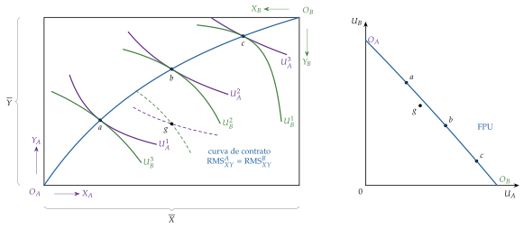
Fuente: elaboración propia a partir de Mas-Colell, Whinston y Green (1995, cap. 16).
Propiedades de la FPU:
pendiente negativa, porque las utilidades son crecientes y no hay externalidades en el consumo;
forma indeterminada: como la utilidad es ordinal, cualquier transformación monótona de \(U_A\) o de \(U_B\) cambia su curvatura; solo importa que sea decreciente;17
todos sus puntos son eficientes en el consumo: los de dentro son ineficientes, y los de fuera, inalcanzables;
hay una FPU para cada par de cantidades \((\overline{X},\overline{Y})\), es decir, una por cada punto de la FPP.18
Eficiencia global
Idea: no basta con producir en la FPP y repartir en la curva de contrato. La composición de la producción tiene que ser la que prefieren los consumidores: su valoración marginal debe coincidir con el coste de oportunidad de producir.
Problema del planificador: maximizar la utilidad de \(A\) dada la de \(B\), con la tecnología y las dotaciones de la economía: \[\tag{1} \begin{array}{rl}\displaystyle \max_{X_A,Y_A,X_B,Y_B,L_X,K_X,L_Y,K_Y} & \displaystyle U_A(X_A,Y_A) \\ \text{s.a.} & U_B(X_B,Y_B)\geq\overline{U}_B \\ & X_A+X_B\leq F_X(L_X,K_X) \\ & Y_A+Y_B\leq F_Y(L_Y,K_Y) \\ & L_X+L_Y\leq\overline{L} \\ & K_X+K_Y\leq\overline{K}\end{array}\] con multiplicadores \(\lambda_U\), \(\lambda_X\), \(\lambda_Y\), \(\lambda_L\) y \(\lambda_K\), uno por restricción. En una solución interior, las condiciones de primer orden son:
en el consumo, \(\partial U_A/\partial X_A=\lambda_X=\lambda_U\,\partial U_B/\partial X_B\) y \(\partial U_A/\partial Y_A=\lambda_Y=\lambda_U\,\partial U_B/\partial Y_B\);
en los factores, \(\lambda_X\mathrm{PMg}^X_L=\lambda_L=\lambda_Y\mathrm{PMg}^Y_L\) y \(\lambda_X\mathrm{PMg}^X_K=\lambda_K=\lambda_Y\mathrm{PMg}^Y_K\).
Resultado: dividiendo, las 3 condiciones del óptimo de Pareto:
\[\mathrm{RMST}^X_{LK}=\mathrm{RMST}^Y_{LK}=\frac{\lambda_L}{\lambda_K},\qquad \mathrm{RMS}^A_{XY}=\mathrm{RMS}^B_{XY}=\frac{\lambda_X}{\lambda_Y}=\mathrm{RMT}_{XY}\tag{2}\]
Interpretación:
si \(\mathrm{RMS}_{XY}>\mathrm{RMT}_{XY}\), los consumidores valoran una unidad más de \(X\) en más unidades de \(Y\) de las que cuesta producirla: conviene producir más \(X\), y al revés;
cada multiplicador es el valor social de una unidad más del bien o del factor, un precio sombra: \(\lambda_X\) es lo que aumentaría la utilidad de \(A\) con una unidad más de \(X\), y \(\lambda_L\), con una unidad más de trabajo;
el planificador no necesita precios, pero su solución los lleva dentro: si los precios de mercado fueran proporcionales a \((\lambda_X,\lambda_Y,\lambda_L,\lambda_K)\), cada agente, mirando solo esos precios, elegiría lo que el planificador le asigna. Es la intuición de Lange y Lerner y la puerta de los 2 teoremas (bloque II);
con utilidades cuasicóncavas y funciones de producción cóncavas, estas condiciones son también suficientes.
Las 3 condiciones en un solo problema. El problema (1) contiene los 2 anteriores: si se fija la producción, es el de la eficiencia en el consumo, y si se fija el reparto, el de la eficiencia en la producción. Por eso una asignación eficiente en la producción y en el consumo puede no serlo globalmente: le falta la condición que une las 2 cajas, \(\mathrm{RMS}_{XY}=\mathrm{RMT}_{XY}\). Planteamiento adaptado de Maté García y Pérez Domínguez (2007), con la notación del tema; la versión con \(I\) consumidores, \(J\) empresas y \(n\) bienes está en el anexo C.
Interpretación gráfica (gráfico 3):
se elige un punto de la FPP, \(E=E_2\), que fija el tamaño de la caja del consumo, \((X^*,Y^*)\), con \(O_A\) en el origen y \(O_B\) en \(E\), y garantiza la eficiencia en la producción;
dentro de esa caja, todos los puntos de la curva de contrato son eficientes en el consumo, pero solo es globalmente eficiente \(E^*\), en el que la pendiente común de las curvas de indiferencia es igual a la de la FPP en \(E\): \(\mathrm{RMS}^A_{XY}=\mathrm{RMS}^B_{XY}=\mathrm{RMT}_{XY}\);
cada punto de la FPP (\(E_1\), \(E_2\), \(E_3\)…) da una FPU (FPU\(_1\), FPU\(_2\), FPU\(_3\)…) con su punto globalmente eficiente (\(E^*_1\), \(E^*_2\), \(E^*_3\)…); la envolvente de esos puntos es la gran frontera de posibilidades de utilidad (GFPU).19
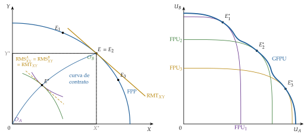
Forma de la GFPU: como la utilidad es ordinal, ni las FPU ni la GFPU tienen por qué ser cóncavas. La GFPU solo tiene que ser decreciente y puede tener tramos convexos (hondonadas), como en el gráfico.
Implicación: hay infinitos óptimos globales, toda la GFPU, y el criterio de Pareto no los ordena.20 La optimalidad de Pareto es una condición necesaria pero no suficiente para maximizar el bienestar social.
I.3. Valoración del criterio de Pareto
Una vez obtenidas las condiciones del óptimo, valoramos el criterio que las sostiene.
Ventajas:
es ordinal: no exige comparar utilidades entre personas;
se basa en pocos juicios de valor, generalmente aceptados, y parte de una noción mínima: no deben desperdiciarse recursos;
permite valorar el mercado competitivo como mecanismo de asignación (bloque II).
Críticas:
es estático: la escuela austriaca prefiere la eficiencia dinámica, la capacidad del sistema para descubrir oportunidades y desplazar la FPP hacia fuera (Huerta de Soto, 2004);
favorece el statu quo: exigir que nadie empeore equivale a dar a cada individuo un derecho de veto (regla de unanimidad), y casi ninguna política lo supera;
es independiente del proceso: vale igual una asignación decidida democráticamente que una impuesta;
ignora la distribución:21 la asignación en la que uno lo tiene todo es un óptimo, porque para que mejore el que no tiene nada tiene que empeorar el otro. Como advierte Sen (1970), una economía puede ser óptima en el sentido de Pareto aunque unos vivan en el lujo y otros al borde de la inanición;22
es incompleto, posiblemente su principal inconveniente: no ordena los infinitos óptimos de la GFPU, ni permite comparar un punto eficiente con uno ineficiente que no esté por debajo y a la izquierda de él.23
Respuestas a la incompletitud: en los años 30 y 40, la nueva economía del bienestar busca ordenar los óptimos sin comparar utilidades por 2 vías:
la neoparetiana de la London School of Economics, con los criterios de compensación: un cambio es una mejora si los ganadores podrían compensar a los perdedores y seguir ganando (Kaldor, 1939; Hicks, 1939). La compensación es potencial, no efectiva, y los criterios pueden contradecirse (Scitovsky, 1941); se desarrollan en el anexo A y se aplican en el análisis coste-beneficio [ver tema 3.A.9];
la neoutilitarista de Harvard, con la función de bienestar social de Bergson (1938) y Samuelson (1947), que elige entre los óptimos con juicios de valor explícitos [ver tema 3.A.24].
Recapitulando: el óptimo económico exige igualar las relaciones marginales de todos los agentes, (2), y lo puede calcular un planificador que lo sepa todo. Pasamos ahora a la pregunta central del tema: ¿lo alcanza el mercado sin planificador?
II. Teoremas fundamentales de la economía del bienestar
Idea: una vez caracterizados los óptimos sin precios, pasamos a la pregunta que da título al tema: ¿qué relación hay entre el equilibrio general competitivo y el óptimo de Pareto?
Conclusión anticipada: se corresponden en los 2 sentidos.
Todo equilibrio competitivo es un óptimo: es el primer teorema fundamental de la economía del bienestar (1TFEB).
Todo óptimo puede ser un equilibrio competitivo si antes se redistribuyen las dotaciones: es el segundo teorema fundamental de la economía del bienestar (2TFEB).
Pero cada sentido exige supuestos distintos, y en esos supuestos está la política económica.
El equilibrio de referencia [ver tema 3.A.21]: un equilibrio walrasiano es un vector de precios \(\vec{p}^*\) y una asignación \((\vec{x}^*_i,\vec{y}^*_j)\) tales que:
cada empresa maximiza su beneficio a esos precios: \(\vec{y}^*_j\) maximiza \(\vec{p}^*\cdot\vec{y}_j\) en \(\mathcal{Y}_j\);
cada consumidor maximiza su utilidad con su renta, \(\overline{W}_i=\vec{p}^*\cdot\vec{\omega}_i+\sum_j\theta_{ij}\,\vec{p}^*\cdot\vec{y}^*_j\), donde \(\theta_{ij}\) es su participación en los beneficios de la empresa \(j\);
todos los mercados se vacían: \(\sum_i\vec{x}^*_i=\sum_i\vec{\omega}_i+\sum_j\vec{y}^*_j\).
Si a la renta de cada consumidor se suma una transferencia de suma fija \(T_i\), que no depende de lo que haga y con \(\sum_iT_i=0\), se habla de equilibrio con transferencias: es el instrumento del 2TFEB.
Origen: las condiciones marginales las formulan Lerner (1934, 1944) y Lange (1942), en el debate sobre el cálculo económico en el socialismo, y las demuestran matemáticamente Hotelling (1938) y Allais (1943). La demostración con análisis convexo, sin derivadas y válida con soluciones de esquina, es de Arrow (1951a) y Debreu (1951, 1954), por separado.
II.1. Primer teorema fundamental de la economía del bienestar (1TFEB)
a) Idea
Enunciado: si las preferencias son localmente no saciables, todo equilibrio walrasiano es un óptimo de Pareto (Arrow, 1951a; Debreu, 1951).
Por qué importa: es la formalización de la mano invisible de A. Smith (1776). Agentes que solo buscan su interés y solo miran precios no dejan sin aprovechar ninguna mejora de Pareto.24
Qué vamos a ver: en el bloque I, el planificador resolvía un solo problema, enorme, con toda la información de la economía, (1), y de él salían las 3 condiciones (2). Ahora nadie resuelve ese problema.
Cada consumidor y cada empresa resuelve el suyo, pequeño, mirando solo los precios.
Vamos a ver, paso a paso, que los precios reparten el trabajo del planificador: cada agente, sin saberlo, cumple la condición de Pareto que le toca.
b) Modelo: el equilibrio general competitivo 2×2×2×2
i) Supuestos
La misma economía: los 2 bienes, los 2 factores, los 2 consumidores y las 2 empresas del modelo de Bator (I.2), con las mismas preferencias y tecnologías. Lo único nuevo son los mercados:
precios: hay un mercado para cada bien y para cada factor, con precios \(p_X\), \(p_Y\), \(w_L\) y \(w_K\), que todos toman como dados;
rentas: cada consumidor vende su dotación de factores y cobra su parte de los beneficios de las empresas, \(\overline{W}_A=w_L\overline{L}_A+w_K\overline{K}_A+\theta_{AX}B_X+\theta_{AY}B_Y\), y lo mismo \(B\);
conducta: los consumidores maximizan su utilidad y las empresas, su beneficio.
Los supuestos de los que depende el resultado son los del equilibrio general competitivo, que la tabla 1 ordena junto con el fallo de mercado que aparece cuando se levanta cada uno.
| N.º | Supuesto | Qué significa | Si se levanta |
|---|---|---|---|
| 1 | No saciedad local | cerca de cualquier cesta hay otra que el consumidor prefiere, de modo que gasta toda su renta | un consumidor saciado puede dejar renta sin gastar y el equilibrio puede no ser eficiente |
| 2 | Mercados completos | todo lo que afecta a la utilidad o a la producción tiene mercado y precio: no hay externalidades ni bienes públicos | externalidades y bienes públicos [ver tema 3.A.23] |
| 3 | Agentes precio-aceptantes | nadie mueve los precios con sus decisiones (el supuesto de atomicidad de la competencia perfecta, [ver tema 3.A.16]) | poder de mercado [ver tema 3.A.17] [ver tema 3.A.18] [ver tema 3.A.19] |
| 4 | Precios comunes | todos se enfrentan a los mismos precios: no hay impuestos que abran cuñas entre lo que paga el comprador y lo que cobra el vendedor | exceso de gravamen [ver tema 4.B.9] |
| 5 | Información perfecta y simétrica | todos observan lo que entra en el intercambio: su calidad, su precio y lo que hace cada parte | selección adversa y riesgo moral [ver tema 3.A.13] |
Fuente: elaboración propia a partir de Mas-Colell, Whinston y Green (1995, párr. 16.C).
Lo que no hace falta: convexidad de las preferencias o de las tecnologías ni ninguna condición sobre los rendimientos. Esas condiciones aseguran que el equilibrio exista [ver tema 3.A.21]; el teorema dice que, si existe, es eficiente.
Lo que se añade para derivar: el desarrollo que sigue usa derivadas y supone soluciones interiores, como el problema del planificador; la prueba general de las extensiones no necesita ninguna de las 2 cosas.
ii) Desarrollo
Paso 1: los consumidores. El consumidor \(A\) elige su cesta con su renta y los precios que ve: \[\begin{array}{rl}\displaystyle \max_{X_A,Y_A} & \displaystyle U_A(X_A,Y_A) \\ \text{s.a.} & p_XX_A+p_YY_A\leq\overline{W}_A\end{array}\] Con multiplicador \(\lambda_A\), la utilidad marginal de su renta, las condiciones de primer orden son \(\partial U_A/\partial X_A=\lambda_Ap_X\) y \(\partial U_A/\partial Y_A=\lambda_Ap_Y\). Dividiendo, y haciendo lo mismo con \(B\): \[\tag{3} \mathrm{RMS}^A_{XY}=\frac{p_X}{p_Y}=\mathrm{RMS}^B_{XY}.\]
Interpretación: cada consumidor compra \(X\) hasta que lo que está dispuesto a dar de \(Y\) por una unidad más iguala lo que el mercado le pide por ella.
Como \(A\) y \(B\) ven los mismos precios, acaban valorando igual los 2 bienes sin conocerse ni negociar: es la eficiencia en el consumo, la tangencia de la caja del consumo.
Paso 2: las empresas en los mercados de factores. Cada empresa elige cuánto trabajo y cuánto capital contrata para maximizar su beneficio: \[\begin{array}{rl}\displaystyle \max_{L_j,K_j} & \displaystyle B_j=p_j\,F_j(L_j,K_j)-w_LL_j-w_KK_j\end{array}\qquad j=X,Y\] Las condiciones de primer orden son \(p_j\,\mathrm{PMg}^j_L=w_L\) y \(p_j\,\mathrm{PMg}^j_K=w_K\): cada factor se contrata hasta que el valor de su producto marginal iguala su precio. Dividiendo: \[\tag{4} \mathrm{RMST}^X_{LK}=\frac{w_L}{w_K}=\mathrm{RMST}^Y_{LK}.\]
Interpretación: las 2 empresas pagan lo mismo por el trabajo y por el capital, y cada una sustituye un factor por otro hasta que su relación técnica iguala el precio relativo de los factores.
Ninguna puede ganar intercambiando factores con la otra: es la eficiencia en la producción, y la economía está en su FPP.
Paso 3: las empresas en los mercados de bienes. De la misma condición, \(p_j=w_L/\mathrm{PMg}^j_L\): el precio iguala lo que cuesta producir una unidad más contratando trabajo, el coste marginal, \(p_j=\mathrm{CMg}_j\) [ver tema 3.A.16]. Dividiendo las de las 2 empresas: \[\tag{5} \frac{p_X}{p_Y}=\frac{\mathrm{PMg}^Y_L}{\mathrm{PMg}^X_L}=\frac{\mathrm{CMg}_X}{\mathrm{CMg}_Y}=\mathrm{RMT}_{XY}.\]
Interpretación: el precio relativo mide lo que le cuesta a la economía una unidad más de \(X\) en unidades de \(Y\), la pendiente de la FPP.
Junto con el paso 1, \(\mathrm{RMS}_{XY}=p_X/p_Y=\mathrm{RMT}_{XY}\): es la eficiencia global. Lo que los consumidores están dispuestos a pagar por una unidad más de \(X\) coincide con lo que cuesta producirla, sin que ningún consumidor sepa nada de tecnología ni ninguna empresa de preferencias.
Paso 4: el vaciado de los mercados. Los pasos anteriores valen para cualquier precio. El equilibrio es el vector de precios con el que los planes de todos son compatibles [ver tema 3.A.21]: \[\begin{aligned}X_A+X_B&=F_X(L_X,K_X), &\qquad Y_A+Y_B&=F_Y(L_Y,K_Y),\\ L_X+L_Y&=\overline{L}, &\qquad K_X+K_Y&=\overline{K}.\end{aligned}\]
Por la ley de Walras, si se vacían 3 mercados se vacía el cuarto, y solo se determinan los precios relativos: uno de ellos se toma como numerario.
El vaciado es lo que convierte las 3 igualdades en una asignación: las \(\mathrm{RMS}\) se evalúan en las cestas que de verdad se consumen y la \(\mathrm{RMT}\), en la producción que de verdad se obtiene. Sin él, cada agente cumpliría su condición con planes incompatibles entre sí.
Resultado: en el equilibrio se cumplen a la vez \[\tag{6} \mathrm{RMST}^X_{LK}=\mathrm{RMST}^Y_{LK}=\frac{w_L}{w_K},\qquad \mathrm{RMS}^A_{XY}=\mathrm{RMS}^B_{XY}=\frac{p_X}{p_Y}=\mathrm{RMT}_{XY},\] que son las condiciones (2) con \(p_X/p_Y=\lambda_X/\lambda_Y\) y \(w_L/w_K=\lambda_L/\lambda_K\).
Los precios de mercado hacen el papel de los precios sombra del planificador, y cada condición la cumple un tipo de agente (tabla 2); las del planificador, paso a paso, están en el anexo C.1.
Con utilidades cuasicóncavas y funciones de producción cóncavas, estas condiciones de primer orden son también suficientes: el equilibrio general competitivo es un óptimo de Pareto. Es el 1TFEB en el modelo 2×2×2×2.∎
| Eficiencia | Planificador (precios sombra) |
Mercado competitivo (precios de mercado) |
Quién la cumple (y al resolver qué) |
|---|---|---|---|
| En la producción | \(\mathrm{RMST}^X_{LK}=\dfrac{\lambda_L}{\lambda_K}=\mathrm{RMST}^Y_{LK}\) | \(\mathrm{RMST}^X_{LK}=\dfrac{w_L}{w_K}=\mathrm{RMST}^Y_{LK}\) | las empresas, al contratar factores (paso 2) |
| En el consumo | \(\mathrm{RMS}^A_{XY}=\dfrac{\lambda_X}{\lambda_Y}=\mathrm{RMS}^B_{XY}\) | \(\mathrm{RMS}^A_{XY}=\dfrac{p_X}{p_Y}=\mathrm{RMS}^B_{XY}\) | los consumidores, al elegir su cesta (paso 1) |
| Global | \(\mathrm{RMS}_{XY}=\dfrac{\lambda_X}{\lambda_Y}=\mathrm{RMT}_{XY}\) | \(\mathrm{RMS}_{XY}=\dfrac{p_X}{p_Y}=\dfrac{\mathrm{CMg}_X}{\mathrm{CMg}_Y}\) | los consumidores y las empresas, al fijar estas su producción (pasos 1 y 3) |
| 1TFEB: los precios de equilibrio son precios sombra del planificador | |||
Fuente: elaboración propia a partir de Mas-Colell, Whinston y Green (1995, párr. 16.F).
El planificador resuelve un problema con toda la información de la economía; el mercado lo parte en 4 problemas pequeños, 2 consumidores y 2 empresas, que solo comparten una información: los precios. Con los precios de equilibrio, las soluciones coinciden.
Interpretación gráfica: en la caja de intercambio, el equilibrio \(E\) que se alcanza desde la dotación \(\vec{\omega}\) está en la curva de contrato, porque la recta de precios es tangente a las 2 curvas de indiferencia en el mismo punto (gráfico 5). Con producción, en el gráfico 3, la pendiente común de la FPP en \(E\) y de las curvas de indiferencia en \(E^*\) es la de la recta de precios, \(p_X/p_Y\).
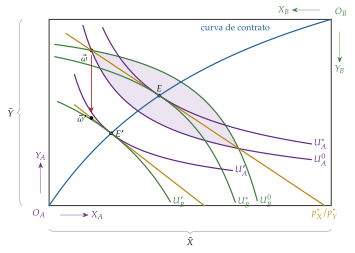
Fuente: elaboración propia a partir de Segura (1996, cap. 7) y Mas-Colell, Whinston y Green (1995, cap. 16).
iii) Implicaciones
Economía de información: el planificador necesita conocer todas las preferencias y tecnologías; en el mercado, a cada agente le basta con conocer los precios y lo suyo (Hayek, 1945). Los precios son las señales que coordinan las decisiones descentralizadas y las hacen compatibles.
Papel del Estado: si se cumplen los supuestos, ninguna intervención en la asignación puede mejorar a todos. El 1TFEB es la defensa del libre mercado: limita el papel del Estado a corregir los fallos que rompen alguno de los supuestos.
El mercado llega a un óptimo, no al óptimo: el equilibrio es uno de los infinitos puntos de la GFPU, el que corresponde a las dotaciones de partida, y no tiene por qué ser el punto de felicidad.25
c) Extensiones
Prueba general por reducción al absurdo (Mas-Colell, Whinston y Green, 1995, párr. 16.C): Arrow y Debreu extienden el resultado a \(I\) consumidores, \(J\) empresas y \(n\) bienes, sin derivadas, de modo que vale también con soluciones de esquina (detalle en el anexo D):
supongamos que existe una asignación factible \((\vec{x}'_i,\vec{y}'_j)\) Pareto superior a la del equilibrio: nadie está peor y alguien está mejor;
quien está mejor no podía pagar su nueva cesta, porque si no la habría elegido: \(\vec{p}^*\cdot\vec{x}'_i>\overline{W}_i\);
quien está igual tampoco podía pagarla por menos de su renta, porque, por la no saciedad local, habría tenido cerca una cesta asequible y mejor: \(\vec{p}^*\cdot\vec{x}'_i\geq\overline{W}_i\);
sumando, y como \(\sum_i\theta_{ij}=1\) y las empresas maximizan el beneficio a los precios \(\vec{p}^*\) (\(\vec{p}^*\cdot\vec{y}^*_j\geq\vec{p}^*\cdot\vec{y}'_j\)): \[\vec{p}^*\cdot\sum_i\vec{x}'_i>\sum_i\overline{W}_i=\vec{p}^*\cdot\sum_i\vec{\omega}_i+\sum_j\vec{p}^*\cdot\vec{y}^*_j\geq\vec{p}^*\cdot\Big(\sum_i\vec{\omega}_i+\sum_j\vec{y}'_j\Big);\]
pero la asignación es factible, \(\sum_i\vec{x}'_i\leq\sum_i\vec{\omega}_i+\sum_j\vec{y}'_j\), y con precios no negativos el primer miembro no puede superar al último: contradicción. Luego el equilibrio es un óptimo de Pareto.∎
Equilibrio con transferencias: la prueba no usa de dónde sale la renta de cada consumidor, solo que las rentas suman el valor de lo disponible. Por eso el teorema vale igual si antes se han hecho transferencias de suma fija, el caso que necesita el 2TFEB (anexo D.1).
d) Evidencia empírica
En el laboratorio: el teorema no se contrasta de forma directa en la economía real, pero sí su mecanismo, que precios comunes lleven a agentes dispersos a la asignación eficiente.
En las subastas dobles de V. L. Smith (1962), cada comprador conoce solo su valoración y cada vendedor solo su coste. Aun así, con pocos participantes, los precios y las cantidades convergen en pocos periodos de negociación a los del equilibrio competitivo, siempre que no haya colusión y todas las pujas sean públicas (V. L. Smith, 1962, 134).26
Gode y Sunder (1993) repiten el experimento con programas que pujan al azar, con la única regla de no comprar por encima de su valoración ni vender por debajo de su coste, y la eficiencia sigue siendo casi completa: buena parte del resultado se debe a las reglas del mercado, no a la racionalidad de los agentes.
Fuera del laboratorio lo que se observa son, sobre todo, los fallos de los supuestos de la tabla 1, que abren la valoración.
e) Valoración
No dice nada de la equidad: el equilibrio depende de las dotaciones, y uno en el que alguien lo tiene casi todo también es eficiente.
Sus supuestos son exigentes, y cada fallo de mercado rompe uno de la tabla 1:
las externalidades y los bienes públicos, el 2 [ver tema 3.A.23];
el poder de mercado, el 3 [ver tema 3.A.17] [ver tema 3.A.18] [ver tema 3.A.19];
los impuestos, el 4 [ver tema 4.B.9];
la información asimétrica, el 5 [ver tema 3.A.13]. Con mercados incompletos o información imperfecta, el equilibrio ni siquiera es un óptimo restringido (Greenwald y Stiglitz, 1986): es la cuestión del apartado III.3.
Presupone la existencia del equilibrio, y no garantiza ni su unicidad ni su estabilidad [ver tema 3.A.21].
Es estático: no dice nada de la innovación ni del crecimiento.
Recapitulando: el 1TFEB dice que el mercado llega a un óptimo. La pregunta siguiente es si puede llegar a cualquiera, en particular al que la sociedad prefiera.
II.2. Segundo teorema fundamental de la economía del bienestar (2TFEB)
a) Idea
Enunciado: si las preferencias y las tecnologías son convexas (y las preferencias, continuas y localmente no saciables), todo óptimo de Pareto puede alcanzarse como equilibrio competitivo tras una redistribución de suma fija de las dotaciones (Arrow, 1951a; Debreu, 1954).
Por qué importa: es el recíproco del primero. Si la sociedad prefiere otro óptimo, por ejemplo el punto de felicidad, no hace falta sustituir el mercado: basta con redistribuir antes y dejar que el mercado haga el resto.
b) Modelo
i) Supuestos
los del 1TFEB (tabla 1);
convexidad de las preferencias y de los conjuntos de producción (sin rendimientos crecientes): es el supuesto nuevo y el decisivo;
transferencias de suma fija \(T_i\), que no dependen de ninguna decisión del agente;
una condición de renta: que cada consumidor, con su renta tras la transferencia, pueda comprar algo más barato que su cesta óptima (por ejemplo, que esta tenga todos sus componentes positivos).
ii) Desarrollo
Intuición gráfica en la caja (gráfico 5): partimos de la dotación \(\vec{\omega}\), cuyo equilibrio es \(E\), y queremos alcanzar otro punto de la curva de contrato, \(E'\).
En \(E'\) las curvas de indiferencia de \(A\) y de \(B\), \(U_A'\) y \(U_B'\), son tangentes, y la recta común las separa: las cestas que \(A\) prefiere a \(E'\) quedan a un lado y las que prefiere \(B\), al otro.
Esa recta es la recta de precios que sostiene \(E'\). Si el Estado lleva la dotación de \(\vec{\omega}\) a cualquier \(\vec{\omega}'\) de esa recta con transferencias de suma fija y deja después que los agentes intercambien libremente, el equilibrio competitivo es \(E'\).
En el espacio de las utilidades (gráfico 6), la redistribución desplaza la economía a lo largo de la GFPU, del equilibrio \(E\) al punto de felicidad \(E'\), tangencia de la GFPU con la curva social más alta, \(W(U_A,U_B)=W^*\).
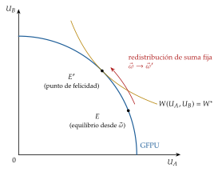
Fuente: elaboración propia a partir de Mas-Colell, Whinston y Green (1995, cap. 16).
Demostración, en 4 pasos (Mas-Colell, Whinston y Green, 1995, párr. 16.D) (detalle en el anexo D):
se toma el óptimo \((\vec{x}^*_i,\vec{y}^*_j)\) y 2 conjuntos: \(V=\sum_iV_i\), la suma de las cestas que cada consumidor prefiere estrictamente a la suya, y \(\mathcal{Y}=\sum_j\mathcal{Y}_j+\{\sum_i\vec{\omega}_i\}\), lo que la economía puede tener disponible. Los 2 son convexos por el supuesto 2;
no se cortan: si lo hicieran, habría una asignación factible que todos prefieren, y \((\vec{x}^*_i,\vec{y}^*_j)\) no sería un óptimo;
por el teorema del hiperplano separador (Minkowski, 1911), 2 conjuntos convexos disjuntos se pueden separar con un hiperplano: existen \(\vec{p}\neq\vec{0}\) y un número \(r\) tales que \(\vec{p}\cdot\vec{z}\geq r\) en \(V\) y \(\vec{p}\cdot\vec{z}\leq r\) en \(\mathcal{Y}\). Ese \(\vec{p}\) es el vector de precios;
a esos precios, cada empresa maximiza su beneficio en \(\vec{y}^*_j\), y todo lo que un consumidor prefiere a \(\vec{x}^*_i\) cuesta al menos \(\overline{W}_i=\vec{p}\cdot\vec{x}^*_i\) (un cuasiequilibrio); con la condición de renta, eso implica que \(\vec{x}^*_i\) maximiza su utilidad con esa renta. Las transferencias que lo hacen posible son \(T_i=\vec{p}\cdot\vec{x}^*_i-\vec{p}\cdot\vec{\omega}_i-\sum_j\theta_{ij}\,\vec{p}\cdot\vec{y}^*_j\), y suman cero.∎
Por qué hace falta la convexidad: sin ella, el conjunto de cestas preferidas puede «envolver» la recta de precios, y no existir ningún precio que deje a cada agente en su mejor punto alcanzable (gráfico 7); con rendimientos crecientes, el óptimo puede no maximizar el beneficio a ningún precio [ver tema 3.A.17].
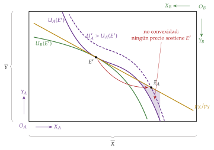
Fuente: elaboración propia a partir de Mas-Colell, Whinston y Green (1995, cap. 16).
iii) Implicaciones
Separación entre eficiencia y equidad: el Estado puede ocuparse de la distribución con transferencias de suma fija y dejar la asignación al mercado. No hay que elegir entre eficiencia y equidad.
Intervención ex ante: el 1TFEB es la defensa del libre mercado; el 2TFEB abre la puerta a la intervención pública por equidad, aunque no haya fallos de mercado, para alcanzar el punto de felicidad que elija una función de bienestar social [ver tema 3.A.24].
Descentralización: el óptimo que maximiza el bienestar social se puede alcanzar con precios; es el argumento del socialismo de mercado de Lange (1936) y Lerner (1944).
c) Valoración: límites y soluciones
Límites:
información: una transferencia de suma fija que redistribuya de verdad tiene que depender de características que el Estado no observa, como la capacidad o el esfuerzo. Si depende de lo observable (la renta ganada, el consumo), los agentes cambian su conducta para pagar menos y la transferencia distorsiona (Mirrlees, 1971): reaparece el dilema entre eficiencia y equidad;
convexidad: con rendimientos crecientes, el óptimo exige precios iguales al coste marginal, con pérdidas que alguien tiene que cubrir [ver tema 3.A.17];
cálculo: para fijar \(\vec{\omega}'\) hay que conocer las preferencias y las tecnologías, justo la información que el 1TFEB ahorraba;
multiplicidad: desde \(\vec{\omega}'\) puede haber otros equilibrios además de \(E'\) [ver tema 3.A.21].
Soluciones: si no hay transferencias de suma fija, se buscan los instrumentos menos distorsionantes:
la imposición óptima sobre los bienes (Ramsey, 1927) y sobre la renta (Mirrlees, 1971), que acepta una pérdida de eficiencia a cambio de equidad [ver tema 4.B.11];
mantener la eficiencia en la producción aunque haya que gravar el consumo (Diamond y Mirrlees, 1971);
gravar la renta y no los bienes cuando las preferencias son separables entre el ocio y los bienes (Atkinson y Stiglitz, 1976);
condicionar las transferencias a rasgos observables y difíciles de cambiar, como la edad o la discapacidad: es el tagging de Akerlof (1978) [ver tema 4.B.3].
Recapitulando: sin transferencias de suma fija, la economía tiene que conformarse con el mejor resultado posible dentro de esa restricción. Es la lógica del second best, que estudia el bloque siguiente.
III. La teoría del second best
Idea: los 2 teoremas describen un mundo en el que todas las condiciones de Pareto pueden cumplirse. Pasamos ahora a lo que ocurre cuando alguna no puede cumplirse, por una restricción institucional, técnica o de información.
Conclusión anticipada: es incómoda.
Corregir lo que se pueda no garantiza acercarse al óptimo: el mejor resultado alcanzable, el segundo óptimo (second best), puede exigir apartarse también de las condiciones que sí se pueden cumplir.
Con información privada, el mejor resultado alcanzable es, en general, un óptimo restringido por los incentivos.
Vocabulario: primer óptimo (first best) es el que cumple todas las condiciones (2); segundo óptimo, el mejor resultado con una restricción adicional que impide alguna. Nunca «de primer o de segundo orden», que son las condiciones de un problema de optimización.
III.1. Idea y resultado general
a) Idea
Pregunta: si una de las condiciones de Pareto no puede cumplirse, ¿conviene cumplir todas las demás?
Visión tradicional: sí. Cuantas más condiciones se cumplan, más cerca del óptimo; la política económica debe eliminar todas las distorsiones que pueda, una a una (política por partes o piecemeal).
Respuesta: Meade (1955b) lo intuye al estudiar las uniones aduaneras, y Lipsey y Lancaster (1956) lo demuestran en general: no necesariamente.
b) Modelo
i) Supuestos
Una economía con \(n\) bienes, el bienestar resumido en la utilidad de un consumidor representativo, \(U(\vec{x})\), y la tecnología en la frontera de transformación \(T(\vec{x})=0\). El primer óptimo exige, para todo bien \(k\) y tomando el \(n\) como referencia, \(\mathrm{RMS}_{kn}=U_k/U_n=T_k/T_n=\mathrm{RMT}_{kn}\).
Una restricción no trivial: una distorsión que el decisor no puede eliminar impide cumplir una de las condiciones, por ejemplo la del bien 1: \[\frac{U_1}{U_n}=\psi\,\frac{T_1}{T_n},\qquad \psi\neq1.\] Que sea no trivial quiere decir que es efectiva (cambia la solución) y que no se puede suprimir; con un impuesto ad valorem \(t\) sobre el bien 1, \(\psi=1+t\).
Origen de la distorsión:
institucional: un impuesto necesario para financiar al Estado, un arancel pactado, una regulación;
tecnológico: los costes fijos de un monopolio natural, que impiden fijar el precio igual al coste marginal sin pérdidas;
de mercado: el poder de mercado de una empresa o una externalidad que no se pueden corregir;
informativo: lo que el Estado no observa (apartado III.3).
ii) Desarrollo
Analítico: se maximiza \(U(\vec{x})\) sujeto a la tecnología, con multiplicador \(\lambda_1\), y a la restricción, con multiplicador \(\lambda_2\). Llamando \(\Psi_k\) a la derivada respecto de \(x_k\) del primer miembro de la restricción, \(\frac{U_1}{U_n}-\psi\frac{T_1}{T_n}\), las condiciones de primer orden dan, para cualquier bien \(k\), \[\frac{U_k}{U_n}=\frac{T_k+\frac{\lambda_2}{\lambda_1}\Psi_k}{T_n+\frac{\lambda_2}{\lambda_1}\Psi_n}.\] Los \(\Psi_k\) dependen de las derivadas segundas cruzadas de \(U\) y de \(T\), cuyo signo no se conoce a priori (derivación completa en el anexo E).
Teorema general del segundo óptimo (Lipsey y Lancaster, 1956): si en un sistema de equilibrio general se introduce una restricción que impide cumplir una de las condiciones de Pareto, las demás, aunque sigan siendo alcanzables, dejan en general de ser deseables. El segundo óptimo exige apartarse también de ellas, en una dirección que depende de las sustituciones y complementariedades entre los bienes.
Interpretación gráfica (gráfico 8):
sin la restricción, lo mejor es el punto de felicidad \(F\) de la GFPU (primer óptimo);
la restricción, una recta, deja fuera de alcance los puntos que quedan por encima de ella, entre ellos \(F\), tangencia de la GFPU con \(W_3\);
\(P\), donde la restricción corta la GFPU, es el mejor punto de la frontera que sigue siendo alcanzable: cumple todas las condiciones de Pareto posibles y está en la curva social \(W_1\);
\(Q\), la tangencia de la restricción con la curva social \(W_2>W_1\), está dentro de la GFPU y, sin embargo, es mejor: es el segundo óptimo;
el segundo óptimo (\(Q\)) no es el punto que más se parece al óptimo de Pareto (\(P\)).
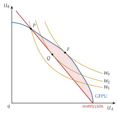
Fuente: elaboración propia a partir de Lipsey y Lancaster (1956).
La analogía de la montaña: quien quiere llegar a la cumbre más alta, \(V\), y encuentra el camino cortado en \(D\), no mejora necesariamente siguiendo hacia ella: si al llegar a \(B\) sabe que no podrá pasar de \(D\), le conviene bajar y subir a la cumbre \(A\), más baja pero accesible (gráfico 9). En una cordillera no se llega a lo más alto andando siempre cuesta arriba.
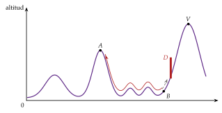
Fuente: elaboración propia a partir de Gandolfo (2014).
iii) Implicaciones
contar condiciones no informa: una situación que cumple más condiciones de Pareto no es necesariamente mejor que otra que cumple menos;
quitar una distorsión cuando hay otras puede subir, bajar o no cambiar el bienestar;
añadir una distorsión puede mejorarlo si compensa otra que no se puede quitar;27
la política por partes no tiene garantía general: hace falta analizar cada caso.
c) Extensiones
Separabilidad: Davis y Whinston (1965) muestran que, si el sector distorsionado es separable del resto (sus relaciones marginales no dependen de lo que pasa en los demás, \(\Psi_k=\Psi_n=0\)), las condiciones de Pareto siguen siendo deseables en los demás sectores: en el sector de la distorsión, una solución de segundo óptimo; en el resto, la asignación paretiana. Rescatan la política por partes cuando las interdependencias son pequeñas.
Eficiencia en la producción: con impuestos óptimos sobre el consumo y rendimientos constantes, el segundo óptimo mantiene la eficiencia en la producción: no se gravan los bienes intermedios y las empresas públicas usan los mismos precios que las privadas (Diamond y Mirrlees, 1971). Es un caso en que sí conviene mantener una de las condiciones.
Corregir en el origen: ante una distorsión interna, el instrumento óptimo actúa sobre ella misma (un impuesto o una subvención interna); un instrumento indirecto, como un arancel, es solo un segundo óptimo, que hasta puede empeorar respecto a no hacer nada (Bhagwati y Ramaswami, 1963).
Recapitulando: cuando no se puede alcanzar el óptimo, acercarse a él por partes no garantiza mejorar. Pasamos a ver dónde se aplica esta idea.
III.2. Aplicaciones
Uniones aduaneras [ver tema 3.B.10]: es el caso que da origen a la teoría, y con él ilustraban su resultado Lipsey y Lancaster.
Una unión aduanera elimina los aranceles entre los socios y los mantiene frente al resto del mundo: suprime una distorsión y deja otra.
Por eso no es necesariamente mejor que un arancel no discriminatorio: a la creación de comercio (ganancia) se opone la desviación de comercio hacia el socio menos eficiente (pérdida) (Viner, 1950; Lipsey, 1957).28
Monopolio contaminante [ver tema 3.A.17] [ver tema 3.A.23]: hay 2 distorsiones, el poder de mercado (se produce poco) y la externalidad (se produce mucho).
Si se impone al monopolista el impuesto pigouviano, igual al coste marginal externo, la producción cae todavía más. El impuesto óptimo \(t^*\) hace que el monopolista, que iguala \(\mathrm{IMg}=\mathrm{CMgP}+t\), produzca la cantidad socialmente óptima \(q^*\), en la que \(p(q^*)=\mathrm{CMgP}(q^*)+\mathrm{CMgE}(q^*)\): \[t^*=\mathrm{CMgE}(q^*)-\frac{p(q^*)}{\lvert\varepsilon_{q,p}\rvert},\] menor que el pigouviano, y negativo (una subvención) si el poder de mercado pesa más que la externalidad (Buchanan, 1969; Barnett, 1980).
Del mismo modo, romper el monopolio sin poder gravar la contaminación aumenta la producción y la externalidad, y puede reducir el bienestar [ver tema 3.A.20].
Protección e industria naciente [ver tema 3.B.8]: si la industria no despega porque el mercado de capitales no financia a las empresas nuevas o porque las primeras no se apropian de lo que aprenden las demás, lo óptimo es corregir esas distorsiones donde nacen, con crédito o subvenciones; un arancel es solo un segundo óptimo, porque además encarece el consumo (Bhagwati y Ramaswami, 1963).
Instituciones y desarrollo [ver tema 3.B.28]: Rodrik (2008) aconseja a los países emergentes instituciones de segundo óptimo, adaptadas a los fallos de mercado y de gobierno que no pueden eliminar a corto plazo, en lugar de copiar las «mejores prácticas» de los avanzados.
El FMI lo vivió en 1997: en septiembre, con la crisis asiática ya en marcha desde julio (Bank of Thailand, 2026), su Comité Provisional aún aprobó en Hong Kong la propuesta de enmendar el Convenio Constitutivo para incluir la liberalización de los movimientos de capital entre sus fines (Fondo Monetario Internacional, 1997).
La crisis mostró que las entradas masivas de capital, con sistemas financieros débiles, habían aumentado la vulnerabilidad de esos países [ver tema 3.B.17].
Imposición y regulación:
como el ocio no se puede gravar, el impuesto óptimo grava más los bienes complementarios del ocio (Corlett y Hague, 1953) [ver tema 4.B.11];
los precios de Ramsey-Boiteux de un monopolio natural que debe cubrir sus costes, y el precio igual al coste medio de un monopolio natural impugnable, son segundos óptimos con presupuesto equilibrado [ver tema 3.A.17] [ver tema 3.A.15];
la variedad de productos que ofrece la competencia monopolística se compara con un segundo óptimo, el que elegiría un planificador que no puede subvencionar [ver tema 3.A.18].
III.3. Second best con información privada: diseño de mecanismos
Idea: los teoremas suponen que el mercado o el Estado disponen de toda la información. El límite 1 del 2TFEB (II.2) lo mostraba: para redistribuir con suma fija hay que conocer lo que cada uno sabe de sí mismo. Cuando cada agente tiene información privada, hay que preguntarse 2 cosas:
si el mercado es eficiente con la información que hay;
si el Estado puede diseñar reglas que lleven a los agentes a revelarla.
Eficiencia restringida: una asignación es eficiente en sentido restringido si ningún planificador sometido a las mismas restricciones de información y de mercados puede mejorar a todos. Es un óptimo con una restricción añadida, como el segundo óptimo, pero la restricción son los incentivos, no una distorsión dada [ver tema 3.A.13].
Con mercados incompletos, el equilibrio puede ser ineficiente incluso en ese sentido, y abrir un mercado más puede empeorar a todos (Hart, 1975): un resultado de segundo óptimo en estado puro.
Con información imperfecta o mercados incompletos, los equilibrios competitivos no son en general eficientes en sentido restringido: hay impuestos y subvenciones que, con la misma información que los agentes, mejorarían a todos (Greenwald y Stiglitz, 1986). Por eso, según Stiglitz (2002), la mano invisible parece a menudo invisible porque no está.
Diseño de mecanismos: el diseñador (el Estado) elige las reglas de un juego para que, jugando cada uno en su interés con su información privada (su tipo \(t_i\)), se alcance el resultado deseado (Hurwicz, 1972).
Por el principio de revelación, basta con buscar entre los mecanismos en los que a cada uno le conviene decir la verdad (compatibilidad de incentivos, \(\mathrm{IC}_i\)) y participar (participación voluntaria, \(\mathrm{PC}_i\)) [ver tema 3.A.14].
En estrategias dominantes: los mecanismos de Vickrey-Clarke-Groves (Vickrey, 1961; Clarke, 1971; Groves, 1973) hacen que decir la verdad sea dominante y que la decisión sea eficiente: cada uno paga el daño que su presencia causa a los demás [ver tema 3.A.23]. Necesitan pagos monetarios y utilidad cuasilineal, y en general no equilibran el presupuesto (Green y Laffont, 1977). Sin pagos, el teorema de Gibbard-Satterthwaite hace manipulable toda regla no dictatorial (Gibbard, 1973; Satterthwaite, 1975) [ver tema 3.A.24].
En juegos bayesianos: si basta con que decir la verdad sea óptimo en promedio, hay mecanismos eficientes que equilibran el presupuesto (d’Aspremont y Gérard-Varet, 1979; Arrow, 1979), pero pueden no respetar la participación voluntaria. En el intercambio entre un comprador y un vendedor con valoraciones privadas, ningún mecanismo es a la vez eficiente, compatible con los incentivos, voluntario y sin déficit (Myerson y Satterthwaite, 1983) (tabla 3).
| Mecanismo | Eficiente | Veraz | Presupuesto equilibrado | Participación voluntaria |
|---|---|---|---|---|
| VCG, estrategias dominantes (Clarke, 1971; Groves, 1973) | sí | sí (dominante) |
no (Green y Laffont, 1977) |
sí |
| Externalidad esperada, juego bayesiano (d’Aspremont y Gérard-Varet, 1979) | sí | sí (en esperanza) |
sí | no siempre |
Fuente: elaboración propia a partir de Mas-Colell, Whinston y Green (1995, cap. 23).
Implicación: con información privada, el óptimo alcanzable es un óptimo restringido por los incentivos. Es la otra cara del límite del 2TFEB: no hay transferencias de suma fija porque nadie revela gratis lo que tiene (Mirrlees, 1971) [ver tema 4.B.11].
Recapitulando: el segundo óptimo no es una anomalía, sino el caso general de la política económica: casi siempre hay alguna restricción que no se puede quitar, y la tarea es encontrar lo mejor dentro de ella.
III.4. Valoración
Falta de reglas generales: como el signo de los \(\Psi_k\) depende del caso, la teoría dice qué no se puede afirmar, pero no qué hacer; por eso se usa a menudo ad hoc.
Consecuencias para la política económica: no hay teoremas generales que aseguren que una política parcial aumenta el bienestar en una economía que incumple varias condiciones de óptimo.
Exigencia de información: el segundo óptimo depende de todas las relaciones de sustitución y de complementariedad de la economía, que el decisor rara vez conoce; aplicar el teorema al pie de la letra exigiría un modelo con todas las interdependencias, que sería inmanejable.
Respuestas prácticas:
el análisis parcial está justificado cuando las interdependencias son pequeñas: al formular la política óptima para la aviación, poco importa lo que ocurra en la pesca;
la separabilidad de Davis y Whinston y el principio de corregir en el origen son formas de simplificar el problema sin perder las interdependencias que importan;
Lipsey (2007), 50 años después, defiende que la teoría sigue vigente y obliga a basar cada política en el conocimiento del caso, no en reglas generales.
Recapitulando: el second best no invalida los teoremas, sino que enseña a usarlos: las condiciones de Pareto siguen siendo la referencia, pero se persiguen todas a la vez o con conocimiento de cómo interactúan.
Conclusión
Recapitulación: en conclusión,
un óptimo de Pareto exige igualar las relaciones marginales en la producción, en el consumo y entre ambas, y hay infinitos, recogidos en la GFPU;
el 1TFEB muestra que, con mercados completos, agentes precio-aceptantes, precios comunes e información perfecta, el mercado competitivo alcanza uno de ellos con solo mirar precios; el 2TFEB, que con convexidad puede alcanzar cualquiera si antes se redistribuye con transferencias de suma fija;
cuando una condición no puede cumplirse, cumplir las demás no garantiza nada, y cuando lo que falla es la información, el óptimo alcanzable es restringido: es el second best.
Relevancia: los teoremas son la vara de medir de la microeconomía normativa. La intervención por eficiencia se justifica por el fallo de algún supuesto del primero; la intervención por equidad, por el segundo, y el second best recuerda que ambas se hacen siempre con restricciones.
Extensiones: los fallos de mercado que rompen el primer teorema [ver tema 3.A.23]; la elección entre óptimos con funciones de bienestar social y el teorema de imposibilidad de Arrow (1951b) [ver tema 3.A.24]; la imposición óptima, que es un segundo óptimo [ver tema 4.B.11], y el diseño de mecanismos y las subastas [ver tema 3.A.14].
Opinión: el valor de los teoremas no está en describir la realidad, ni en defender el laissez-faire o la planificación, sino en ordenar las preguntas: ante cada propuesta de intervención, qué supuesto falla, qué restricción no se puede quitar y qué información hace falta.
Idea final: Pigou veía en el entusiasmo social el origen de la economía, y Pareto advertía que quien recomienda una medida práctica debe atender no solo a sus consecuencias económicas, sino también a las morales y a las políticas (Pareto, 1906). Entre los 2 está la respuesta a la pregunta del principio: el mercado competitivo asigna bien cuando se cumplen todas las condiciones, y cuando no, no hay mal que por bien no venga: una distorsión bien elegida puede compensar otra que no se puede quitar, pero solo quien sabe cuál es el óptimo sabe qué mal trae un bien.
A. Anexo: los criterios de compensación
Los criterios de compensación son la primera respuesta de la nueva economía del bienestar a la incompletitud del criterio de Pareto (I.3). Han salido del título del tema en la convocatoria de 2023, pero se recogen aquí por si el tribunal pregunta y porque el análisis coste-beneficio los aplica.
Idea
El enfoque neoparetiano desarrolla la economía del bienestar a partir de variaciones del criterio de Pareto. Nace en la London School of Economics.
Acepta que las utilidades no se pueden comparar entre personas, pero cree posible comparar estados sociales sin juicios de valor, de modo que se llegue a la misma conclusión «se sea liberal o socialista, nacionalista o internacionalista, cristiano o pagano» (Hicks, 1939; Fonseca, 2026).
La propuesta es renunciar a la unanimidad a cambio de la compensación potencial: un cambio es una mejora si los que ganan podrían compensar a los que pierden y seguir ganando, aunque la compensación no se pague.
Se trabaja en el espacio de las utilidades: cada situación, que corresponde a una producción eficiente distinta, tiene su FPU.
Los criterios
Kaldor (Kaldor, 1939): pasar de un estado a otro es una mejora si, en el estado final, los ganadores pueden compensar a los perdedores y seguir mejor que al principio. Dicho de otro modo: desde el estado final hay una redistribución que es Pareto superior al inicial. Gráficamente, la FPU del estado final pasa por encima y a la derecha del punto inicial. En el gráfico 10, el paso de 2 a 3 cumple el criterio: desde 3, redistribuyendo por la FPU\(_1\), se llega a \(\gamma\), Pareto superior a 2.
Hicks (Hicks, 1939): pasar de un estado a otro es una mejora si, en el estado inicial, los perdedores no pueden sobornar a los ganadores para que renuncien al cambio y quedar todos mejor que con él: sustituye la compensación potencial por el soborno potencial. Gráficamente, el punto final queda por fuera de la FPU inicial. En el gráfico 11, el paso de 1 a 4 cumple el criterio: desde 1, el soborno por la FPU\(_1\) llega como mucho a \(\zeta\), que no es Pareto superior a 4.
La paradoja de Scitovsky (Scitovsky, 1941): si las 2 FPU se cortan, los criterios de Kaldor y de Hicks pueden ser inconsistentes. En el gráfico 12, Kaldor recomienda pasar de 2 a 3 y, una vez en 3, volver a 2, de modo que la economía podría oscilar indefinidamente (paradoja de la reversión). Para evitarlo, Scitovsky exige los 2 criterios a la vez: que los ganadores puedan compensar a los perdedores (Kaldor) y que los perdedores no puedan sobornar a los ganadores (Hicks). En el gráfico, solo los pasos de 2 a 1 y de 3 a 4 cumplen el doble criterio (tabla 4).
Little (Little, 1949, 1950): los criterios anteriores ignoran la distribución, y la compensación no se paga. Su criterio dual exige, además del de Scitovsky, que la distribución no empeore.29
En el panel a) del gráfico 13, la distribución se mide por la distancia del rayo de cada punto a la bisectriz: de los puntos de la FPU\(_2\) que cumplen el doble criterio respecto a 1 (2, 3, 4, 5 y 6), solo 2, 4 y 5 cumplen el de Little (tabla 5).
En el panel b), con FPU que se cortan, solo el tramo resaltado de la FPU\(_2\), entre el corte de las 2 FPU y 4, es preferido a 1.
Puede contradecir al criterio de Pareto: rechaza el paso a 3, que mejora a \(A\) sin empeorar a \(B\), porque empeora la distribución.
Samuelson (Samuelson, 1950): la situación 2 es mejor que la 1 si la FPU\(_2\) está entera por fuera de la FPU\(_1\) (gráfico 14): para cualquier reparto de la situación 1 hay uno de la 2 que mejora a todos.
Es transitivo, pero muy restrictivo: casi nunca una frontera domina a la otra.
Compara situaciones (conjuntos de posibilidades), no asignaciones: no garantiza que el cambio efectivo, sin compensación, sea una mejora de Pareto.
Gorman (Gorman, 1955): el doble criterio de Scitovsky evita la reversión entre 2 situaciones, pero con 3 o más puede ser intransitivo (1 mejor que 2, 2 mejor que 3 y 3 mejor que 1). Solo el criterio de Samuelson lo evita.
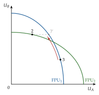
Fuente: elaboración propia a partir de Kaldor (1939).
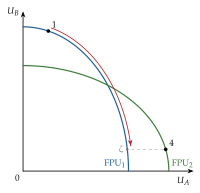
Fuente: elaboración propia a partir de Hicks (1939).
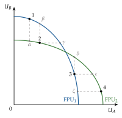
Fuente: elaboración propia a partir de Scitovsky (1941).
| Paso | Kaldor | Hicks | Scitovsky |
|---|---|---|---|
| 1 \(\to\) 2 | \(\times\) (\(\alpha\)) | \(\times\) (\(\beta\)) | \(\times\) |
| 2 \(\to\) 1 | \(\checkmark\) (\(\beta\)) | \(\checkmark\) (\(\alpha\)) | \(\checkmark\) |
| 1 \(\to\) 4 | \(\times\) (\(\alpha\)) | \(\checkmark\) (\(\zeta\)) | \(\times\) |
| 4 \(\to\) 1 | \(\times\) (\(\zeta\)) | \(\checkmark\) (\(\alpha\)) | \(\times\) |
| 2 \(\to\) 3 | \(\checkmark\) (\(\gamma\)) | \(\times\) (\(\delta\)) | \(\times\) |
| 3 \(\to\) 2 | \(\checkmark\) (\(\delta\)) | \(\times\) (\(\gamma\)) | \(\times\) |
| 3 \(\to\) 4 | \(\checkmark\) (\(\varepsilon\)) | \(\checkmark\) (\(\zeta\)) | \(\checkmark\) |
| 4 \(\to\) 3 | \(\times\) (\(\zeta\)) | \(\times\) (\(\varepsilon\)) | \(\times\) |
Fuente: elaboración propia.
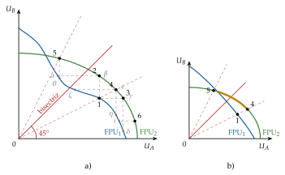
Fuente: elaboración propia a partir de Little (1950).
| Paso | Kaldor | Hicks | Scitovsky | Equidad | Little | Pareto |
|---|---|---|---|---|---|---|
| 1 \(\to\) 2 | \(\checkmark\) | \(\checkmark\) | \(\checkmark\) | \(\checkmark\) | \(\checkmark\) | \(\checkmark\) |
| 1 \(\to\) 3 | \(\checkmark\) | \(\checkmark\) | \(\checkmark\) | \(\times\) | \(\times\) | \(\checkmark\) |
| 1 \(\to\) 4 | \(\checkmark\) | \(\checkmark\) | \(\checkmark\) | \(\checkmark\) | \(\checkmark\) | \(\checkmark\) |
| 1 \(\to\) 5 | \(\checkmark\) | \(\checkmark\) | \(\checkmark\) | \(\checkmark\) | \(\checkmark\) | \(\times\) |
| 1 \(\to\) 6 | \(\checkmark\) | \(\checkmark\) | \(\checkmark\) | \(\times\) | \(\times\) | \(\times\) |
Fuente: elaboración propia. Pareto: nadie empeora y al menos uno mejora.
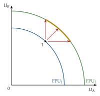
Fuente: elaboración propia a partir de Samuelson (1950).
Valoración
Compensación potencial, no efectiva: si no se paga, los perdedores pierden de verdad. Declarar el cambio deseable equivale a pesar más la ganancia de unos que la pérdida de otros: es una comparación interpersonal implícita, la misma que una utilidad ordinal no permite y que el criterio quería evitar (Little, 1950) [ver tema 3.A.8].
Inconsistencia: los criterios que ordenan muchas situaciones (Kaldor, Hicks, Scitovsky) pueden ser contradictorios o intransitivos, y el que no lo es (Samuelson) apenas ordena nada.
Herencia: el análisis coste-beneficio aplica el criterio de Kaldor-Hicks cuando suma excedentes [ver tema 3.A.9], y la vertiente distributiva continúa en las funciones de bienestar social, que eligen entre los óptimos con juicios de valor explícitos [ver tema 3.A.24].
Para ampliar. G. L. Fonseca, The Paretian System: Social Welfare, en The History of Economic Thought Website: los criterios en la caja de Edgeworth y con producción, y la crítica de Gorman.
B. Anexo: curvas de contrato especiales
La forma de la curva de contrato depende de las preferencias (gráfico 15, con los 9 casos numerados como en la lista: 1a, 1b, 1c, 2, 3a, 3b, 4, 5 y 6). En todos los casos, los 2 vértices de la caja, en los que un consumidor (o una empresa) lo tiene todo y el otro nada, son óptimos: para que mejore el que no tiene nada hay que quitarle algo al otro.
Sustitutivos perfectos para los 2 (curvas de indiferencia rectas, \(\mathrm{RMS}\) constante):
(1a) si \(\mathrm{RMS}^A_{XY}>\mathrm{RMS}^B_{XY}\), la curva de contrato son los lados inferior y derecho de la caja (\(A\) se queda con todo el \(X\) antes de tener \(Y\));
(1b) si \(\mathrm{RMS}^A_{XY}<\mathrm{RMS}^B_{XY}\), son los lados izquierdo y superior;
(1c) si son iguales, toda la caja, incluidos sus lados: en ningún punto se puede mejorar a uno sin empeorar al otro.
\(A\) con sustitutivos perfectos y \(B\) con preferencias estrictamente convexas: la curva de contrato es el lugar en el que la \(\mathrm{RMS}\) del segundo iguala la constante del primero, completado con los tramos de los lados de la caja que llegan a los vértices.
Complementarios perfectos para los 2 (curvas en ángulo recto): si los vértices de las curvas de los 2 están sobre la misma recta, la diagonal de la caja, la curva de contrato es esa diagonal (caso 3a). Si no (caso 3b), los óptimos forman una zona, los 2 triángulos comprendidos entre los rayos de vértices de cada uno, que se cortan: en ella los 2 tienen sobrante del mismo bien, y como el otro es escaso para ambos, no se puede mejorar a uno sin empeorar al otro.
\(A\) con complementarios perfectos y \(B\) con preferencias estrictamente convexas: la curva de contrato es el rayo de vértices de \(A\), desde \(O_A\) hasta el lado superior de la caja, y después ese lado hasta \(O_B\). El resto del lado superior no es eficiente, porque allí puede variar la utilidad de \(B\) sin que varíe la de \(A\).
\(A\) con complementarios perfectos y \(B\) con sustitutivos perfectos: igual que el caso anterior, el rayo de vértices de \(A\) y el lado superior hasta \(O_B\).
Preferencias sobre bienes distintos: si a \(A\) solo le gusta \(X\) (\(\mathrm{RMS}^A_{XY}=+\infty\)) y a \(B\) solo \(Y\) (\(\mathrm{RMS}^B_{XY}=0\)), el único óptimo es el vértice en el que \(A\) tiene todo el \(X\) y \(B\) todo el \(Y\).
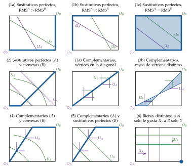
Fuente: elaboración propia a partir de Varian (1992, cap. 17).
C. Anexo: el problema del planificador con \(I\) consumidores, \(J\) empresas y \(n\) bienes
C.1. Las 3 condiciones en el 2×2×2×2, paso a paso
El problema (1) se puede resolver sustituyendo las restricciones que se cumplen con igualdad, como en Maté García y Pérez Domínguez (2007): \(X_B=X-X_A\), \(Y_B=Y-Y_A\), \(L_Y=\overline{L}-L_X\) y \(K_Y=\overline{K}-K_X\). La lagrangiana es \[\mathcal{L}=U_A(X_A,Y_A)+\lambda_U\big[U_B(X-X_A,\,Y-Y_A)-\overline{U}_B\big]+\lambda_X\big[F_X(L_X,K_X)-X\big]+\lambda_Y\big[F_Y(\overline{L}-L_X,\,\overline{K}-K_X)-Y\big],\] con variables \(X_A\), \(Y_A\), \(X\), \(Y\), \(L_X\) y \(K_X\). Las condiciones de primer orden se agrupan en 4 bloques:
Bloque A: respecto de \(X_A\) e \(Y_A\): \(\partial U_A/\partial X_A=\lambda_U\,\partial U_B/\partial X_B\) y \(\partial U_A/\partial Y_A=\lambda_U\,\partial U_B/\partial Y_B\); dividiendo, \(\mathrm{RMS}^A_{XY}=\mathrm{RMS}^B_{XY}\);
Bloque B: respecto de \(X\) e \(Y\): \(\lambda_U\,\partial U_B/\partial X_B=\lambda_X\) y \(\lambda_U\,\partial U_B/\partial Y_B=\lambda_Y\); dividiendo, \(\lambda_X/\lambda_Y=\mathrm{RMS}^B_{XY}\);
Bloque C: respecto de \(L_X\) y \(K_X\): \(\lambda_X\mathrm{PMg}^X_L=\lambda_Y\mathrm{PMg}^Y_L\) y \(\lambda_X\mathrm{PMg}^X_K=\lambda_Y\mathrm{PMg}^Y_K\); dividiendo, \(\mathrm{RMST}^X_{LK}=\mathrm{RMST}^Y_{LK}\);
Bloque D: de las mismas 2 condiciones, \(\lambda_X/\lambda_Y=\mathrm{PMg}^Y_L/\mathrm{PMg}^X_L=\mathrm{PMg}^Y_K/\mathrm{PMg}^X_K=\mathrm{RMT}_{XY}\).
Eficiencia en el consumo: el bloque A.
Eficiencia en la producción: el bloque C.
Eficiencia global: los bloques A, B y D juntos, \(\mathrm{RMS}^A_{XY}=\mathrm{RMS}^B_{XY}=\lambda_X/\lambda_Y=\mathrm{RMT}_{XY}\): son las condiciones (2).
C.2. La versión general
Economía (Mas-Colell, Whinston y Green, 1995, párr. 16.F): consumidores \(i=1,\dots,I\) con utilidades \(U_i(\vec{x}_i)\) y dotaciones \(\vec{\omega}_i\); empresas \(j=1,\dots,J\) con tecnologías descritas por funciones de transformación \(T_j(\vec{y}_j)\leq0\) (planes netos: componentes negativos, factores; positivos, productos) [ver tema 3.A.11]; \(n\) bienes, entre ellos los factores. Es la misma especificación del equilibrio general [ver tema 3.A.21].
Problema del planificador: maximizar la utilidad del consumidor 1 dados los niveles de los demás, con la tecnología y los recursos: \[\tag{7} \begin{array}{rl}\displaystyle \max_{\vec{x}_1,\dots,\vec{x}_I,\ \vec{y}_1,\dots,\vec{y}_J} & \displaystyle U_1(\vec{x}_1) \\ \text{s.a.} & U_i(\vec{x}_i)\geq\overline{U}_i,\quad i=2,\dots,I \\ & T_j(\vec{y}_j)\leq0,\quad j=1,\dots,J \\ & \textstyle\sum_i\vec{x}_i\leq\sum_i\vec{\omega}_i+\sum_j\vec{y}_j\end{array}\] con multiplicadores \(\delta_i\) (\(\delta_1=1\)) para las utilidades, \(\gamma_j\) para las tecnologías y \(\lambda_k\), \(k=1,\dots,n\), para el balance de cada bien.
Condiciones de primer orden (en una solución interior): \(\delta_i\,\partial U_i/\partial x_{ki}=\lambda_k\) para todo consumidor y bien, y \(\gamma_j\,\partial T_j/\partial y_{kj}=\lambda_k\) para toda empresa y bien. Dividiendo las de 2 bienes \(k\) y \(l\): \[\mathrm{RMS}^i_{kl}=\frac{\lambda_k}{\lambda_l}=\mathrm{RMT}^j_{kl}\qquad\text{para todo consumidor }i\text{ y toda empresa }j.\] Si \(k\) y \(l\) son factores de la empresa \(j\), \(\mathrm{RMT}^j_{kl}\) es su \(\mathrm{RMST}\); si uno es factor y el otro producto, es su productividad marginal.
Interpretación: los \(\lambda_k\) son los precios sombra de los bienes. Con utilidades cuasicóncavas y conjuntos de producción convexos, estas condiciones son también suficientes, y si los precios de mercado son proporcionales a \((\lambda_1,\dots,\lambda_n)\), cada agente elige por sí mismo lo que el planificador le asigna: es el puente con los 2 teoremas.
El 2×2×2×2 es el caso \(I=2\), \(J=2\) y \(n=4\) (\(X\), \(Y\), \(L\), \(K\)), con los consumidores dueños solo de los factores.
D. Anexo: demostraciones de los teoremas fundamentales
Economía con \(I\) consumidores, \(J\) empresas y \(n\) bienes (Mas-Colell, Whinston y Green, 1995, cap. 16): preferencias \(\succsim_i\) sobre \(\mathbb{R}^n_+\), conjuntos de producción \(\mathcal{Y}_j\), dotaciones \(\vec{\omega}_i\) y participaciones \(\theta_{ij}\).
D.1. Primer teorema
Enunciado: si las preferencias son localmente no saciables y \((\vec{x}^*_i,\vec{y}^*_j,\vec{p}^*)\) es un equilibrio con transferencias (rentas \(\overline{W}_i\) con \(\sum_i\overline{W}_i=\vec{p}^*\cdot\sum_i\vec{\omega}_i+\sum_j\vec{p}^*\cdot\vec{y}^*_j\)), la asignación es un óptimo de Pareto. Con \(T_i=0\) es el equilibrio walrasiano.
Demostración:
Supongamos que \((\vec{x}'_i,\vec{y}'_j)\) es factible y Pareto superior: \(\vec{x}'_i\succsim_i\vec{x}^*_i\) para todo \(i\) y \(\vec{x}'_h\succ_h\vec{x}^*_h\) para algún \(h\).
Para \(h\): si \(\vec{p}^*\cdot\vec{x}'_h\leq\overline{W}_h\), el consumidor \(h\) habría elegido \(\vec{x}'_h\). Luego \(\vec{p}^*\cdot\vec{x}'_h>\overline{W}_h\).
Para todo \(i\): si fuera \(\vec{p}^*\cdot\vec{x}'_i<\overline{W}_i\), por la no saciedad local habría una cesta \(\vec{x}''_i\) tan cerca de \(\vec{x}'_i\) que seguiría siendo asequible y con \(\vec{x}''_i\succ_i\vec{x}'_i\succsim_i\vec{x}^*_i\), y el consumidor no habría elegido \(\vec{x}^*_i\). Luego \(\vec{p}^*\cdot\vec{x}'_i\geq\overline{W}_i\).
Sumando: \(\sum_i\vec{p}^*\cdot\vec{x}'_i>\sum_i\overline{W}_i=\vec{p}^*\cdot\sum_i\vec{\omega}_i+\sum_j\vec{p}^*\cdot\vec{y}^*_j\).
Como cada empresa maximiza el beneficio, \(\vec{p}^*\cdot\vec{y}^*_j\geq\vec{p}^*\cdot\vec{y}'_j\), y entonces \(\sum_i\vec{p}^*\cdot\vec{x}'_i>\vec{p}^*\cdot\big(\sum_i\vec{\omega}_i+\sum_j\vec{y}'_j\big)\).
Pero la factibilidad, \(\sum_i\vec{x}'_i\leq\sum_i\vec{\omega}_i+\sum_j\vec{y}'_j\), con precios no negativos, implica lo contrario. Contradicción.∎
Qué no se ha usado: ni convexidad ni diferenciabilidad. Sí que todos los bienes tienen precio y que los precios son comunes: si un bien no tuviera precio, como una externalidad, el paso 5 no recogería su coste.
D.2. Segundo teorema
Enunciado: si los \(\mathcal{Y}_j\) son convexos y las preferencias son convexas y localmente no saciables, para todo óptimo de Pareto \((\vec{x}^*_i,\vec{y}^*_j)\) existe \(\vec{p}\neq\vec{0}\) tal que \((\vec{x}^*_i,\vec{y}^*_j,\vec{p})\) es un cuasiequilibrio con transferencias: las empresas maximizan el beneficio y, para cada consumidor, todo lo que prefiere a \(\vec{x}^*_i\) cuesta al menos \(\overline{W}_i=\vec{p}\cdot\vec{x}^*_i\).
Demostración:
Sean \(V_i=\{\vec{x}_i:\vec{x}_i\succ_i\vec{x}^*_i\}\) y \(V=\sum_iV_i\); con preferencias convexas, cada \(V_i\) es convexo, y su suma también.
Sea \(\mathcal{Y}=\sum_j\mathcal{Y}_j+\{\sum_i\vec{\omega}_i\}\), lo que la economía puede tener disponible; es convexo porque lo son los \(\mathcal{Y}_j\).
\(V\cap\mathcal{Y}=\emptyset\): si no, habría cestas \(\vec{x}_i\succ_i\vec{x}^*_i\) para todos, factibles con algunos \(\vec{y}_j\in\mathcal{Y}_j\), y \((\vec{x}^*_i,\vec{y}^*_j)\) no sería un óptimo.
Por el teorema del hiperplano separador (Minkowski, 1911), existen \(\vec{p}\neq\vec{0}\) y \(r\) con \(\vec{p}\cdot\vec{z}\geq r\) para todo \(\vec{z}\in V\) y \(\vec{p}\cdot\vec{z}\leq r\) para todo \(\vec{z}\in\mathcal{Y}\).
Por la no saciedad local, cada \(\vec{x}^*_i\) está en la clausura de \(V_i\), de modo que \(\vec{p}\cdot\sum_i\vec{x}^*_i\geq r\); y como \(\sum_i\vec{x}^*_i=\sum_i\vec{\omega}_i+\sum_j\vec{y}^*_j\in\mathcal{Y}\), también \(\leq r\). Luego \(\vec{p}\cdot\sum_i\vec{x}^*_i=r\).
Empresas: para cualquier \(\vec{y}_j\in\mathcal{Y}_j\), \(\sum_i\vec{\omega}_i+\vec{y}_j+\sum_{h\neq j}\vec{y}^*_h\in\mathcal{Y}\), luego \(\vec{p}\cdot\vec{y}_j\leq\vec{p}\cdot\vec{y}^*_j\): \(\vec{y}^*_j\) maximiza el beneficio.
Consumidores: si \(\vec{x}_i\succ_i\vec{x}^*_i\), entonces \(\vec{x}_i+\sum_{h\neq i}\vec{x}^*_h\) está en la clausura de \(V\), luego \(\vec{p}\cdot\vec{x}_i\geq\vec{p}\cdot\vec{x}^*_i\).
Transferencias: \(T_i=\vec{p}\cdot\vec{x}^*_i-\vec{p}\cdot\vec{\omega}_i-\sum_j\theta_{ij}\,\vec{p}\cdot\vec{y}^*_j\), que suman cero por el paso 5.∎
Del cuasiequilibrio al equilibrio: si las preferencias son continuas y el consumidor puede comprar alguna cesta más barata que \(\overline{W}_i\) (por ejemplo, si \(\vec{x}^*_i\) tiene todos los componentes positivos), minimizar el gasto para la utilidad de \(\vec{x}^*_i\) equivale a maximizar la utilidad con la renta \(\overline{W}_i\) (Mas-Colell, Whinston y Green, 1995, prop. 16.D.2). Sin esa condición, un consumidor sin renta en el lado de la caja puede no estar maximizando su utilidad, aunque nadie le venda nada más barato.
E. Anexo: planteamiento analítico del second best
Primer óptimo: con un consumidor representativo, \[\begin{array}{rl}\displaystyle \max_{\vec{x}} & \displaystyle U(\vec{x}) \\ \text{s.a.} & T(\vec{x})=0\end{array}\] Con \(\mathcal{L}=U(\vec{x})-\lambda_1T(\vec{x})\), las condiciones \(U_k=\lambda_1T_k\), \(k=1,\dots,n\), dan \(U_k/U_n=T_k/T_n\): \(\mathrm{RMS}_{kn}=\mathrm{RMT}_{kn}\) para todo \(k\).
Segundo óptimo (Lipsey y Lancaster, 1956): una distorsión que no se puede eliminar impide la condición del bien 1: \[\begin{array}{rl}\displaystyle \max_{\vec{x}} & \displaystyle U(\vec{x}) \\ \text{s.a.} & T(\vec{x})=0 \\ & \dfrac{U_1}{U_n}-\psi\,\dfrac{T_1}{T_n}=0,\quad \psi\neq1\end{array}\] La restricción va sobre los cocientes, no sobre las derivadas sueltas: es la forma invariante a transformaciones monótonas de \(U\). Con \[\mathcal{L}=U(\vec{x})-\lambda_1T(\vec{x})-\lambda_2\Big[\frac{U_1}{U_n}-\psi\,\frac{T_1}{T_n}\Big],\] las condiciones de primer orden son \[U_k-\lambda_1T_k-\lambda_2\Psi_k=0,\qquad \Psi_k\equiv\frac{U_nU_{1k}-U_1U_{nk}}{U_n^2}-\psi\,\frac{T_nT_{1k}-T_1T_{nk}}{T_n^2},\] y, dividiendo la del bien \(k\) entre la del \(n\), \[\frac{U_k}{U_n}=\frac{T_k+\frac{\lambda_2}{\lambda_1}\Psi_k}{T_n+\frac{\lambda_2}{\lambda_1}\Psi_n}.\]
Resultado: los \(\Psi_k\) dependen de las derivadas segundas cruzadas de \(U\) y de \(T\), cuyo signo no se conoce a priori. En general \(U_k/U_n\neq T_k/T_n\) también para \(k\neq1\): el segundo óptimo sigue en la frontera de transformación (la restricción \(T(\vec{x})=0\) se cumple), pero se aparta de la condición de Pareto en los demás bienes, en una dirección que depende de las complementariedades.
Excepción: si \(\Psi_k/\Psi_n=T_k/T_n\), en particular si \(\Psi_k=\Psi_n=0\) (las relaciones marginales del bien 1 no dependen de \(x_k\) ni de \(x_n\): separabilidad), la condición de Pareto entre \(k\) y \(n\) sigue siendo óptima (Davis y Whinston, 1965).∎
F. Anexo: qué estudia cada tema del bloque
Competencia perfecta [ver tema 3.A.16]: la competencia perfecta en un mercado, con equilibrio parcial: demanda, oferta, equilibrio, ajuste, plazos y bienestar medido con excedentes, con los 2 teoremas en su versión de equilibrio parcial.
Equilibrio general [ver tema 3.A.21]: la competencia perfecta en todos los mercados a la vez, como un sistema de ecuaciones simultáneas: excesos de demanda, ley de Walras, precios relativos que vacían todos los mercados, existencia, unicidad y tanteo multimercado.
Este tema: el óptimo de Pareto en general y los 2 teoremas fundamentales con todos sus supuestos, incluido el 2TFEB (con convexidad y el teorema del hiperplano separador), y el second best, también cuando la restricción es la información. Los criterios de compensación, en el anexo A.
Fallos de mercado [ver tema 3.A.23]: cuando hay externalidades o bienes públicos, el equilibrio competitivo deja de ser eficiente; la intervención y los fallos del sector público.
Funciones de bienestar social [ver tema 3.A.24]: el óptimo que maximiza el bienestar social no tiene por qué coincidir con el que alcanza el mercado; elegir entre óptimos exige juicios de valor y es materia de la elección colectiva.
Otros supuestos del 1TFEB: el poder de mercado y su regulación [ver tema 3.A.17] [ver tema 3.A.20]; la información asimétrica [ver tema 3.A.13], y el diseño de mecanismos [ver tema 3.A.14].
G. Anexo: aspectos para el test y preguntas del tribunal
Preguntas tipo test del primer ejercicio: simulador de test.
Óptimo de Pareto: ordinal; 4 juicios de valor (individualismo, no paternalismo, benevolencia, independencia del proceso); incompleto.
Condiciones: \(\mathrm{RMST}^X_{LK}=\mathrm{RMST}^Y_{LK}\) (producción), \(\mathrm{RMS}^A_{XY}=\mathrm{RMS}^B_{XY}\) (consumo), \(\mathrm{RMS}_{XY}=\mathrm{RMT}_{XY}\) (global). Las 2 primeras son necesarias, no suficientes.
FPU: decreciente, de curvatura indeterminada (utilidad ordinal); la GFPU es la envolvente de las FPU.
1TFEB: solo necesita no saciedad local (y mercados completos, precio-aceptación, precios comunes, información perfecta); no necesita convexidad. 2TFEB: necesita convexidad y transferencias de suma fija.
Fechas: Pareto (1906), Bergson (1938), Kaldor y Hicks (1939), Scitovsky (1941), Lange (1942), Little (1949-1950), Samuelson (1950), Arrow (1951), Debreu (1951, 1954, 1959), Gorman (1955), Meade (1955), Lipsey y Lancaster (1956), Davis y Whinston (1965), Diamond y Mirrlees (1971), Hart (1975), Greenwald y Stiglitz (1986).
Second best: con una condición imposible, las demás dejan en general de ser deseables; no es lo mismo que el óptimo restringido de la información asimétrica.
Preguntas probables del tribunal
¿Por qué la utilidad marginal decreciente no es un supuesto del modelo? ¿Qué forma tiene la FPU y por qué?
¿Por qué una asignación eficiente en la producción y en el consumo puede no ser un óptimo global?
¿Qué interpretación tienen los multiplicadores del problema del planificador? ¿Qué relación guardan con los precios de equilibrio?
En el equilibrio general competitivo, ¿qué agente cumple cada condición de Pareto y al resolver qué problema? ¿Para qué hace falta el vaciado de los mercados?
¿Necesita el primer teorema la convexidad? ¿Y el segundo? ¿Por qué?
¿Qué es un cuasiequilibrio y por qué hace falta la condición de renta en el 2TFEB?
¿Por qué no son factibles las transferencias de suma fija? ¿Qué se hace en su lugar?
¿Puede un impuesto aumentar el bienestar? Póngase un ejemplo de segundo óptimo.
¿En qué se diferencian el segundo óptimo de Lipsey y Lancaster y el óptimo restringido de la economía de la información?
¿Qué criterio de compensación aplica el análisis coste-beneficio y qué problemas tiene?
Bibliografía
Traducción propia de la parte I, cap. I, § 1.↩︎
Lo había propuesto antes Jules Dupuit (Dupuit, 1844) [ver tema 3.A.9].↩︎
Pareto llama ofelimidad a la utilidad entendida como pura satisfacción subjetiva de un deseo, sea o no beneficioso, para separarla del sentido corriente de «útil» (Pareto, 1906; Fonseca, 2026).↩︎
Kenneth Arrow recibió en 1972, junto con John Hicks, el Premio Nobel «por sus contribuciones pioneras a la teoría del equilibrio económico general y a la teoría del bienestar» (The Nobel Prize, 1972).↩︎
Cabe distinguir entre la optimalidad débil, si no existe ninguna asignación que mejore a todos los agentes, y la optimalidad fuerte, si no existe ninguna en la que alguno mejore y ninguno empeore. Aquí se trabaja con la fuerte, que implica la débil.↩︎
No importa, por ejemplo, si un bien se produce en una empresa grande o en muchas pequeñas, ni si son de propiedad privada o pública: la organización de la producción solo importa en la medida en que afecte a las utilidades.↩︎
Es un juicio de valor fuerte, que muchos no aceptarían en cualquier circunstancia: pocos respetarían sin más la preferencia de quien decide consumir heroína, y a veces se proponen como excepciones el alcohol, el tabaco, la sanidad, la educación o el ahorro.↩︎
El modelo general, con \(I\) consumidores, \(J\) empresas y \(n\) bienes, es el de Mas-Colell, Whinston y Green (1995, cap. 16): el problema del planificador en esa versión está en el anexo C, y los teoremas del bloque II se demuestran con ella en el anexo D.↩︎
Las 2 tecnologías pueden ser distintas: no tienen por qué usar los factores con la misma intensidad.↩︎
Una isocuanta reúne las combinaciones de \(L\) y \(K\) que dan el mismo nivel de producción; su pendiente, en valor absoluto, es la \(\mathrm{RMST}_{LK}\), el ritmo al que un factor puede sustituir al otro sin que cambie la producción [ver tema 3.A.11].↩︎
La curva de contrato no es en general una isoclina: las tangencias se producen con pendientes distintas. Es la diagonal solo si las 2 tecnologías emplean los factores en la misma proporción a cualquier precio relativo (por ejemplo, si son homotéticas e idénticas salvo la escala); en ese caso, con rendimientos constantes, la FPP es una recta. Los 2 vértices de la caja, en los que una empresa usa todos los factores y la otra ninguno, también son eficientes (anexo B).↩︎
La FPP es el equilibrio de las empresas llevado al espacio de los bienes. Hace falta porque en el óptimo lo que se produce tiene que ser lo que se consume, y los consumidores deciden en el espacio de los bienes.↩︎
La última igualdad usa que, al minimizar costes, \(\mathrm{CMg}_j=w_L/\mathrm{PMg}^j_L\) [ver tema 3.A.12]: el cociente de costes marginales mide lo mismo que la \(\mathrm{RMT}\), pero en dinero.↩︎
Con rendimientos decrecientes los pagos a los factores no agotan el producto y las empresas tienen beneficios, que se reparten entre los consumidores según sus participaciones \(\theta_{ij}\) [ver tema 3.A.21].↩︎
Una curva de indiferencia reúne las cestas de \(X\) e \(Y\) que dan la misma utilidad; su pendiente, en valor absoluto, es la \(\mathrm{RMS}_{XY}\), el ritmo al que el consumidor está dispuesto a cambiar un bien por otro sin que cambie su utilidad [ver tema 3.A.8].↩︎
La frontera de posibilidades de utilidad la introduce Allais (1943) («surface de rendement maximum») y, de forma independiente, Samuelson (1950), de quien procede el nombre actual. Según Fonseca (2026), la teoría de Pareto se habría entendido mejor si hubiera usado de forma explícita la frontera de utilidades.↩︎
La FPU se dibuja cóncava por costumbre, pero la concavidad solo tendría sentido con utilidades cardinales y comparables entre individuos; en general solo es decreciente (Fonseca, 2026).↩︎
En una economía de intercambio puro, la FPU es el final del análisis; con producción hay infinitas FPU, y hace falta el paso siguiente.↩︎
Si en algún punto de la FPP no hubiera ningún reparto con la pendiente adecuada, la GFPU tendría puntos aislados o tramos; con los supuestos del modelo es una curva continua (Bator, 1957).↩︎
Cada óptimo fija los 10 valores del modelo 2×2×2×2: \(L_X\), \(K_X\), \(L_Y\), \(K_Y\), \(X\), \(Y\), \(X_A\), \(Y_A\), \(X_B\) e \(Y_B\). Como se obtienen solo a partir de las formas funcionales, con independencia de los precios, la solución es tecnocrática; para quedarse con uno de ellos hacen falta juicios de valor adicionales que agreguen las preferencias.↩︎
En respuesta, Foley (1967) propone las asignaciones justas: las que, además de eficientes, son equitativas, entendidas como libres de envidia (ningún agente prefiere la cesta de otro a la suya) [ver tema 3.A.24].↩︎
Amartya Sen recibió en 1998 el Premio Nobel «por sus contribuciones a la economía del bienestar» (The Nobel Prize, 1998). Que a la gente le importa el reparto se ve en el laboratorio. En el juego del ultimátum (Güth, Schmittberger y Schwarze, 1982), un jugador propone cómo repartir una cantidad y el otro acepta o rechaza, y si rechaza ninguno cobra. Todo reparto de la cantidad entera es eficiente en el sentido de Pareto, y con jugadores que solo miran su dinero el equilibrio de Nash perfecto en subjuegos es ofrecer lo mínimo y aceptarlo. En el experimento original, la oferta más frecuente era el reparto a medias; un metaanálisis de 75 resultados da una oferta media del 40 % y un 16 % de rechazos, más frecuentes cuanto menor es la oferta (Oosterbeek, Sloof y Kuilen, 2004) [ver tema 3.A.14] [ver tema 3.A.1].↩︎
Pareto llama máximo de ofelimidad a la optimalidad que alcanza la competencia; Wicksell, en sus reseñas de Pareto (Wicksell, 1958, 143, 169), le reprocha confundirla con el óptimo social: hay infinitos óptimos, y el equilibrio competitivo no tiene por qué ser el socialmente preferido.↩︎
Feldman (1987) resume la fuerza del teorema con una imagen: si las decisiones de producción y de consumo se tomaran lanzando dardos a una diana, la probabilidad de acertar en un óptimo sería nula, así que decir que el mercado lo alcanza es decir mucho.↩︎
Que el equilibrio coincida con el punto de felicidad depende de las dotaciones. Esa posible divergencia entre el óptimo que alcanza el mercado y el que maximiza el bienestar social es la que da pie al 2TFEB.↩︎
Vernon Smith recibió en 2002 el Premio Nobel «por haber establecido los experimentos de laboratorio como herramienta del análisis económico empírico, en especial en el estudio de mecanismos de mercado alternativos» (The Nobel Prize, 2002).↩︎
Un ejemplo hipotético: si las entradas de cine soportan un impuesto que no se puede tocar, gravar también las suscripciones a plataformas de vídeo, un sustitutivo, desplaza demanda hacia el cine, cuyo consumo era demasiado bajo, y puede reducir la ineficiencia total. El impuesto español sobre determinados servicios digitales no grava esas suscripciones (Jefatura del Estado, 2020).↩︎
Meade (1955a) añade un tercer efecto, la expansión del comercio.↩︎
«Parece improbable que mucha gente estuviera dispuesta a decir hoy en Inglaterra que un cambio que hiciera a los ricos tanto más ricos que pudieran (pero no fueran a) compensar en exceso a los pobres, empobrecidos por el cambio, aumentaría necesariamente la riqueza de la comunidad» (Little, 1950, 90); traducción propia.↩︎